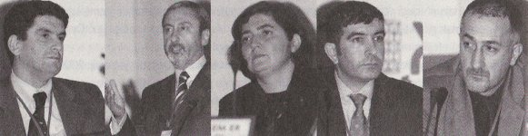
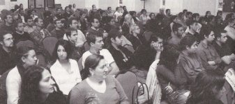
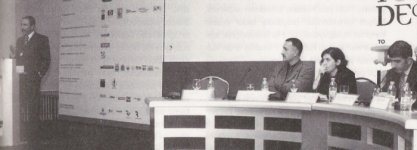

|
ADesign
Fair 2004 Panel tarihi: 08-10-2004
Yer: Harbiye Askeri Müzesi - Ahmet Fethi Paþa Salonu,
Ýstanbul
Moderatör:
Alpay Er, ETMK
istanbul Yönetim Kurulu Baþkaný. Öðretim üyesi, ÝTÜ
Konuþmacýlar:
Hüsnü Karagözoðlu, Yönetim Danýþmaný
Doç. Dr. Özlem Er, Öðretim üyesi, ÝTÜ
Salih
Karabacak, Endüstriyel Tasarým Yöneticisi, Arçelik
A.Þ.
Ümit Altun, DesignUM
|  |
|
Alpay
Er
|
Hüsnü
Karagözoðlu
|
Doç.
Dr. Özlem Er
|
Salih
Karabacak
|
Ümit
Altun
|
Tasarýmý
yönlendirmek; Yirminci yüzyýlýn baþlarýnda, firmalarýn kendi
bünyelerinde tasarým birimleri kurmalarýyla ortaya çýkan bir
kavram tasarým yönetimi. Bu kavram, firmalarýn rekabet gücüyle
de yakýndan ilgili. Peki, tasarým yönetimi günümüzde ne kadar
önem taþýyor?
Alpay
Er:
Sürdürülebilir
rekabet gücü paneline hoþ geldiniz. Hava muhalefetine raðmen
fuar etkinliklerinin devam diyor olmasý çok hoþ. Küçük, ama
inanmýþ bir grup olduðumuzu gösteriyor bu bence tasarým konusunda.
Sayý her zaman çok önemli deðil, küçük ve inanmýþ bir grup
gerektiðinde çok güzel þeyler baþarabilir. Bunu söylerken,
kendi deneyimime dayanýyorum. Endüstriyel Tasarýmcýlar Meslek
Grubu, ETMK Ýstanbul Þube Baþkaný'yým. Derneðimizin faaliyetleri,
genellikle az sayýda inanmýþ, tasarýmý Türkiye'de endüstriye,
sanayiye, topluma anlatma konusunda istekli, azimli küçük
bir grubun çalýþmalarý...
Bugün
burada, tasarým yönetimi konusunda bir panel yapacaðýz. Aslýnda,
panel diyoruz ama, belli
bir strüktürü var toplantýnýn. Buna niye gerek duyduk? Tasarým
yükselen bir deðer, bunu herkes söylüyor. Ancak, tasarýmýn
içerisinde yükselen bir baþka deðer daha var: Tasarým yönetimi.
Tasarým yönetimi, tasarýmýn iþ dünyasýyla iliþkisini, tasarýmýn
iþ dünyasýyla ara kesitini simgeliyor. Önemi önümüzdeki dönemde
çok daha artacak. Tasarým yönetimi konusunda açýk bir tartýþma
ortamýndansa, bir seminer formatýný daha uygun gördük. Bu
konunun uzmanlarýný davet ederek, öncelikle bilgilendirici
bir toplantý gerçekleþtirmek istedik. Toplantýnýn iki bölümü
var. Her bir katýlýmcýmýz 20'þer dakikalýk sunum yapacak.
Daha sonra, sizlerin sorularýyla tartýþma kýsmýna geçeceðiz.
Ýsterseniz,
katýlýmcýlarýmýzý þu anki oturuþ sýralarýna göre sizlere tanýtayým;
Sayýn
Hüsnü Karagözoðlu: Hüsnü Bey, Orta Doðu Teknik Üniversitesi
Kimya Mühendisliði Bölümü'nden mezun. Sonrasýnda, Endüstri
Mühendisliði Bölümü'nde yüksek lisans yapmýþ. Daha sonra da
Orta Doðu Teknik Üniversitesi idari Bilimler Fakültesi'nde,
altý yýllýk bir öðretim görevlisi deneyimi var. Sonrasýnda
Hüsnü Bey'i özel sektörde görüyoruz. Bildiðimiz, tanýdýðýmýz
bir marka; Kelebek Mobilya'da yirmi yýllýk bir deneyimi var.
Önce, fabrika müdürlüðü, ardýndan genel müdürlük ve murahhas
üye olarak görev yapmýþ. Hüsnü Bey, þu anda serbest yönetim
danýþmanlýðý yapýyor.
Ýkinci
sýrada Ümit Altun var. Ümit Bey'i tasarým camiasý yakýndan
tanýyor diye düþünüyorum. Ümit Altun, 1985 yýlýnda Mimar Sinan
Üniversitesi Endüstri Ürünleri Tasarýmý Bölümü'nden mezun
oldu. Sýrasýyla 1985-1987 yýllarý arasýnda Otokar, 1988 yýlýnda
Asyatel Teletaþ'ta tasarýmcý olarak çalýþtý. Ayný firmada
1994'e kadar tasarým bölümü þefi olarak görev yaptý. 1994
yýlýnda Arçelik'te uzman tasarýmcý olarak çalýþmaya baþladý.
2002 yýlýnda tasarým bölümü yöneticiliðine atandý. Bir yýl
bu görevde çalýþtýktan sonra, kendi tasarým firmasýný kurmak
üzere 2003 yýlýnda Arçelik'ten ayrýlan Ümit Altun, yaklaþýk
bir yýldýr kendi kurduðu tasarým ofisinde, DizaynUM adýný
verdiði firmasýnda, tasarým çalýþmalarýný sürdürüyor.
Üçüncü
konuðumuz, Doç. Dr. Özlem Er, bir akademisyen. Lisans ve yüksek
lisans derecelerini Orta Doðu Teknik Üniversitesi'nden, doktora
derecesini ise Manchester Metropolitan Üniversitesi'nden aldý.
1996-2000 yýllarý arasýnda Orta Doðu Teknik Üniversitesi Endüstri
Ürünleri Tasarým Bölümü'nde öðretim üyesi olarak çalýþtý.
1996 yýlýnda, ayný zamanda, ODTÜ'de Tasarým Yönetimi derslerini
baþlattý. 2000 yýlýndan bu yana da Ýstanbul Teknik Üniversitesi
Endüstri Ürünleri Tasarým Bölümü öðretim üyesi. ETMK'da yönetim
kurulu baþkanlýðý dahil olmak üzere çeþitli görevler aldý.
Çeþitli kurum ve kurullarda oluþturulan çalýþma gruplarýnda
yer almýþ ve en sonunda Ýstanbul Sanayii Odasý Kalite Ar-Ge
ve Teknoloji ihtisas Komisyonu (KATEK) çalýþmalarý kapsamýnda
KOBÝ'lere yönelik endüstriyel tasarým kýlavuzunun yazýmýnda
görev almýþ.
Son
konuðumuz Salih Karabacak. Salih Bey de 1990 yýlýnda Orta
Doðu Teknik Üniversitesi Makine Mühendisliði Bölümü'nden mezun
olmuþ. 1990-98 yýllarýnda ürün geliþtirme mühendisi, Arçelik
firmasýnda 1998-99 yýllarýnda üretimde takým lideri görevlerini
üstlenmiþ. 1999-2003 yýllarý arasýnda ürün yöneticiliði yapan
Salih Bey, halen Arçelik A.Þ.'nde Endüstriyel Tasarým Bölümü
Yöneticisi.
Öncelikle,
Özlem Haným'a söz veriyoruz. Özlem Haným, bize tasarým yönetimi
kavramýný anlatacak. Bu terim, terminoloji nereden çýktý?
Özellikle bunun yurt dýþýndaki yansýmalarýna dayanarak bir
giriþ yapacak. Bir kavramsal çerçevede sunacak. Daha sonra,
bu kavramsal çerçeveyi, Hüsnü Bey, stratejik düzeyde deðerlendirecek.
Bunun hemen arkasýndan Salih Bey'i alacaðýz. Salih Bey, organizasyon
düzeyinde tasarým yönetimi nasýl bir þeydir? Bu konuda bize
bir fikir vermeye çalýþacak. Son olarak, Ümit Bey tasarým
yönetimini operasyonel düzeyde, proje düzeyinde bizlerle paylaþacak.
Ben Özlem Haným'ý davet ederek, yöneticilik görevime þimdilik
son veriyorum.

Özlem
Er:
Merhabalar,
hoþ geldiniz. Gerçekten hava muhalefetine raðmen burada olan
herkese teþekkürler. Evet, Alpay Bey'in de bahsettiði gibi,
sizlere tarihsel bir perspektif eþliðinde, 'tasarým yönetimi
bir kavram olarak nasýl geliþti?' bunu anlatmaya çalýþacaðým.
Daha sonra, tasarým yönetiminin tanýmlarýný, farklý kiþilerin
tasarým yönetimini nasýl tanýmladýðýný ve tasarým yönetiminin
düzeylerini, olasý deðiþim yönlerini anlatmaya çalýþacaðým.
Çünkü, tasarým yönetimi kavramý da deðiþen bir kavram, "olasý
deðiþim yönleri nedir?" o konularda bilgi vermeye çalýþacaðým.
Tasarým
yönetiminin ayrý bir alan olarak belirmesi, tasarýmýn firma
bünyesinde ayrý bir uzmanlýk alaný olarak uygulanmaya baþlamasýyla
ortaya çýkar. Yirminci yüzyýlýn baþlarýnda firmalarýn kendi
bünyelerinde tasarým birimleri kurmalarýyla ortaya çýkan bir
kavram olduðunu söyleyebiliriz. Tasarým etkinliðinin yönetilme,
yönlendirilme ihtiyacý, özellikle otuzlu yýllardan itibaren
Amerika'daki General Motors, General Electric gibi büyük firmalarda
oluþturulan, geniþ tasarým gruplarýyla artmýþtýr. General
Motors firmasý örneðinde 'Art and Colors Section' adýyla tanýrnlanan,
firrna içi tasarým ya da o zamanki adýyla 'styling' birimlerinin
çalýþmalarý, firma pazarlama stratejileri baðlamýnda yönlendirilmiþtir.
Endüstriyel
tasarým mesleðinin öncüleri olan ve tasarým tarihine, yýldýz
tasarýmcýlar olarak geçen Henry Dreyfus gibi tasarýmcýlarýn
Amerika'nýn o zamanki büyük firmalarýna yaptýklarý iþler,
bu iþ yapma sürecinde karþýlaþtýklarý güçlükler, iki taraf
arasýndaki iliþkinin yönetilme ihtiyacý, tasarým yönetimi
yönünde bir ihtiyaç yaratmýþtýr. Az önce de söylediðim gibi,
firma bünyesi dýþýndan tasarým hizmeti veren tasarýmcýlarýn
süreç içinde yaþadýklarý güçlükler, deneyimlerinden dersler
çýkarmalarýna neden olmuþ ve tasarým yönetimi kavramý da ilk
olarak endüstriyel tasarým pratiðinden gelen kiþilerin ortaya
sürdüðübir kavram olarak belirmiþtir.
Endüstriyel
tasarým pratiði, o dönemde, en geliþkin olarak Amerika'da
yürütüldüðü için, Amerikan tasarýmcýlarýnýn geliþtirdiði bir
kavram olarak görüyoruz ilk baþta. Kýrklý yýllardan itibaren
mesleki anlamda kullanýlmaya baþlandý tasarým yönetimi terimi.
Ellili yýllarýn ikinci yarýsýnda, mesleki yayýnlarda yer aldý.
Örneðin, ID dergisinin 1957 sayýsýnda, tasarým yönetiminden
bahsediliyor.
Tasarým
yönetiminin geliþiminde etkili ikinci bir ülke, Ýngiltere.
Tasarým yönetimi kavramýnýn ilk olarak kullanýlmaya baþlanmasý,
altmýþlý yýllarda gerçekleþiyor. 1965'te Ýngiltere'de Royal
Society of Arts'ýn Design Council ile birlikte organize ettiði
tasarým yönetimi ödülleri organizasyonu var. Ýlk olarak yine
bir serbest tasarýmcý, 'Michael Farr'ýn Tasarým Yönetimi'
adýyla 1966 yýlýnda çýkardýðý kitap, yavaþ yavaþ artýk tasarým
yönetimini kavramsallaþtýrdý.
Evet,
iki ülkenin etkili olduðunu söylemiþtim tasarým yönetimi kavramýnýn
geliþiminde. Amerika'da, tasarým yönetimi kavramýnýn geliþimi,
genellikle bu iþin pratiðini yapan insanlarýn karþýlaþtýðý
güçlüklerin ortadan kaldýrýlmasý için geliþtirdikleri bir
kavram olarak karþýmýza çýkýyor. Bazý kuruluþlar, özellikle
tasarým yönetiminin geliþmesinde çok etkili oluyorlar. Ýngiltere'de
ise, hükümetin özellikle ingiliz imalat sanayinin karþýlaþtýðý
sorunlarý çözmek için, hükümet inisiyatifiyle desteklenen
bir kavram olarak geliþiyor.
Bazý
kurumlar önemli oluyor Amerika'daki geliþiminde. Profesyonel
tasarýmcýlarýn kurulmasýna ön ayak olduðu Design
Management Institute ve Design Management Institute'tan
ayrýlan kiþilerin kurduðu Corporate
Design Foundation, iki önemli kurum. Design Management
Institute'ýn faaliyetleri özellikle önemli. 1976'dan bu yana,
tasarým yönetimi konusunda yýllýk konferanslar düzenliyorlar.
Harvard Business
School ile iþbirliði içindeler. Tasarým yönetimi eðitiminde
kullanýlmak üzere, eðitime yönelik vaka çalýþmalarý, kullanýlýyor.
Ýlk vaka çalýþmasý Braun KF40 kahve makinesi. Tasarým yönetimi
üzerine, ilk yüksek lisans eðitim programý Design Management
Institute ve Westminister University, iþbirliðinde kuruluyor.
Bütün bunlar, önemli geliþmeler ve tasarým yönetimi kavramýnýn
kurumsallaþmasýna etkin faaliyetler. Corporate Design Foundation
da öte yandan, 'The Journal of Business and Design" diye
bir dergi çýkarýyor. Özellikle, iþletme okullarýyla tasarým
okullarý arasýnda iþbirliðine yönelik eðitim programlarý geliþtirmesi
yönünde faaliyetler gösteriyorlar.
Söylediðim
gibi, ikinci etkili ülke Ýngiltere. Ýngiltere'de neler yapýlýyor?
Ýngiltere'de özellikle seksenlerde Thatcher hükümeti döneminde,
tasarým yönetimi kavramýna özel bir önem veriliyor. Buradaki
vurgu da tasarýmla firmalarýn ticari performanslarý arasýndaki
nedensel iliþkinin araþtýrmalar yoluyla özellikle ortaya konulmasý.
Bir dizi rapor ýsmarlanýyor önemli bir takým insanlara ve
bu raporlar o insanlarýn ismiyle daha sonra anýlýyor ve birçok
kaynakta bunlara referans veriliyor.
Ne
yapýlýyor baþka Ýngiltere'de? Endüstri ve ticaret çevreleri
hedeflenerek, tasarýma yapýlan yatýrýmýn ticari deðerinin
araþtýrma yoluyla ortaya konulmasý önemli. Çünkü, o zamana
kadar genellikle, Design Council aracýlýðýyla, hep tasarýmýn
önemli olduðu, hayat kalitesini yükseltmedeki önemi falan
bahsediliyor. Fakat buna, endüstri kulaðýný týkýyor, bu mesajý
almýyor. Çünkü, kârla iliþkilendirilmiyor bu mesaj. Firmalarýn
baþarýsýyla iliþkilendirilmiyor, ticari baþarýyla iliþkilendirilmiyor.
Bunun bir eksiklik olduðu fark ediliyor ve bunu ispatlamaya
yönelik bazý araþtýrma çalýþmalarý yapýlýyor. Örnek iþletme,
uygulama ve stratejilerinin incelenmesi yoluyla kurumsal tasarým
yönetimi politikalarýnýn geliþtirilmesi, baþarýlý uygulamalar
yapan, tasarýmla baþarýya ulaþan firmalar örnek alýnýyor.
Buralardan nasýl dersler çýkarýlabileceklerine yönelik, çoðu
kez akademik çalýþmalar yapýlýyor.
Tasarým
yönetimi mesajýnýn tartýþýlmasý ve yaygýnlaþtýrýlmasý amacýyla,
yeni araçlar geliþtiriliyor. Bazý dergiler var; Co-design
Journal gibi dergiler çýkarýlýyor. European
Academy of Design diye bir kurumsallaþma içinde, iki yýlda
bir kongreler
düzenleniyor. Yüksek lisans ve lisans programlarýna yönelik,
tasarým yönetimine özelleþen ders programlarý geliþtiriliyor.
Bütün bu araþtýrmalar, tasarýmýn, firmalarýn pazarda rekabetçi
üstünlük kazanmalarýnda önemli bir araç ve önemli stratejik
bir rekabet faktörü olduðunu kesinlikle ortaya koyuyor.
Diðer
bir bulgu, ticari performansta bir katký yapabilmesi için,
tasarýmýn öneminin mutlaka her düzeyde kavranmasý gerekiyor.
Firmada ve etkin bir þekilde de yönetilmesi gerekiyor, kendiliðinden
olmuyor. Nasýl pazarlama yönetiliyor, üretim yönetiliyorsa,
tasarým da yönetilen bir etkinlik haline gelmeli deniyor.
Evet, konuya gösterilen ilgideki artýþ, stratejik bir rekabet
faktörü olarak, tasarýmýn kazandýðý önemle doðrudan iliþkilidir.
Burada, seksenler sonrasý endüstrideki geliþmeler, teknolojideki
geliþme ve tasarýmýn giderek artan, kalitenin de üstüne geçen
bir rekabet faktörü olmasýnda, tasarýmýn öneminin artmasýný
saðlayan faktörler.
Tasarým
yönetimini nasýl tanýmlayabileceðimize dair, tarihsel bir
perspektif içinde bilgiler verdim. Bu tanýmlarda nasýl farklýlýklar
var, ona bakacaðýz biraz;
Ýlk
taným þöyle: Tasarýmýn kurumsal amaçlara baðlý, görünür bir
yönetim izleme ve kaynak ayýrma sistemi kapsamýnda, firma
ya da kuruluþ içinde formal bir program dahilinde yürütülmesi.
Burada, önemli bazý þeyler var. Görünür olmasý, yani firmanýn
tasarýmý yönettiðini, dýþarýdan bakan kiþilerin de görebiliyor
olmasý, programlarýnýn biriminin belli olmasý önemli. Çünkü,
çoðu kez firmalara gittiðinizde, tasarým faaliyetinin adý
konmadan, aslýnda baþka uzmanlýk alanlarýna sahip kiþiler
tarafýndan yapýldýðýný görüyoruz. Formal bir program olmasý,
yani 'Biz tasarýma tabii çok önem veriyoruz, yapýyoruz' gibi
konuþmak yerine, 'Peki ne yapýyorsunuz?' denildiðinde, bir
kanýt gösterilebiliyor olmasý önemli.
Ayný
zamanda, tasarým yönetimi, tasarýmýn ticari ve organizasyonel
baðlamýný araþtýran akademik bir disiplin. Benzer bir þekilde,
Robert Blaich'in de (Herman Miller firmasýnda ve Philips'te
tasarým yöneticiliði yapan bir kiþi) tasarým yönetimi üzerine
bir kitabý var. Robert Blaich de ayný þeyi söylüyor, diyor
ki: 'Tasarým yönetimi varsa bir firmada, o firmada tasarým
faaliyetinin varlýðý görünür
hale gelir. Tasarýmýn, firmanýn stratejik planlamasýna katký
yapmasýný ve teknik geliþim, üretim ve pazarlama süreçlerine
de kolaylaþtýrýcý bir rol oynamasýný saðlar'.
Öte
yandan, hep vurgulanan da tasarým yönetimi, rutin idari faaliyetlerin
bir yöneticiye devredilmesi deðildir. Bütçe, personel yönetimi
ve diðer normal idari iþler de tasarým yönetiminin parçalarýdýr.
Ancak, tasarým yönetiminin farklýlýðý ve tasarýmýn firmaya
kazandýrabileceði stratejik deðerin tanýnmasýyla ilgilidir.
Bunun bir implikasyonu var. Üst yönetimin, tasarýmýn stratejik
önemini anlamýþ olmasý gerekir. Sadece rutin bir þekilde yönetiliyor
olmasý, tasarým yönetimiyle hedeflenen amaçlara ulaþýlmasýný
saðlamaz. Genel olarak uzlaþýlan nokta, tasarým yönetiminin
genel iþletme teori ve tekniklerinin tasarýma uygulanmasýndan
ibaret olmadýðýdýr. Peki, neden buna vurgu yapýlýyor? Çünkü,
tasarým yaratýcý bir faaliyettir. Yaratýcý bir faaliyet, diðer
faaliyetler gibi yönetilemez. Bir farklýlýðýn olmasý gerekir.
Yaratýcýlýk yönetimi, bu anlamda yeni bir tanýma ulaþýlabilir:
Yaratýcý süreçlerin firma stratejisi baðlamýnda koordine edilmesi
ve yönlendirilmesi etkinliði.
Tabii,
burada altýný çizdiðimiz þeylerden bir tanesi, firmanýn bir
stratejisi olacak ve onunla ilintili bir tasarým yönetimi
politikasý olacak. Firma stratejisinden baðýmsýz bir tasarým
yönetimi politikasý düþünülemez. Burada, "genel iþletme
teorilerinden ya da yöntemlerinden farký nedir?" dediðimizde
burada iþte bu farký biraz daha açýyoruz. Tasarým yönetiminin,
kýsa vadeli hedeflere yönelik kontrol mekanizmasý olarak anlaþýlmasý
yanlýþtýr. Tasarým yönetiminin, yalnýzca bir süreç kontrolü
olarak algýlanmasý, bu kavramýn çýkýþýyla amaçlanan yaratýcý
düþünce ve eyleminin etkisini artýrma düþüncesinden uzaklaþýlmasýna
yol açar.
Burada,
yavaþ yavaþ olasý deðiþim yönleri dediðim konuya giriyoruz.
Ne gibi yeni konular tasarým yönetiminin ilgi alanýna girmeye
baþlýyor? Biraz da onlardan bahsetmeye baþlýyoruz. Tasarým
yönetimi üzerine okuyanlarýn çok iyi bildiði yazarlardan Ýngiliz
iki akademisyen
Rachel Cooper ve Mike Press'in söylediðine göre; tasarýmcýlar
21. yy 'da sürdürülebilir kalkýnma, yeni teknolojilerin etkileri,
kullanýlabilirlik, ekoloji, yoksulluk gibi konularla karþý
karþýyadýr ve bunlarla baþ etmek için, tasarýmýn firmalarýn
kýsa vadeli çýkarlarýnýn ötesinde yurttaþlarýn hizmetine sokulmasý
gerekmektedir. Onlara göre, tasarýma atfedilecek böyle bir
rol, tasarým yönetimi kavramýný da aþar. Bu nedenle, yeni
bir terime ihtiyaç duyulduðunu söylüyorlar.
Ýtalyan
profesör Ezio Manzini'nin, özellikle sürdürülebilirlik konusunda
çok önemli çalýþmalarý var. Ezio Manzini de benzer bir þeye
dikkat çekiyor. Ona göre de geçtiðimiz yüzyýlda ürünler, hizmetler
üzerinde baskýnken, günümüzde giderek artan bir oranda hizmetler
ürünler üzerinde baskýn olmaktadýr. Ürün temelli bir ekonomiden
hizmet temelli bir ekonomiye doðru bir paradigma deðiþimi
yaþanmaktadýr. Bu dönüþüm ýþýðýnda firmalarýn daha farklý
ve yüksek bir tasarým yeteneðine ihtiyaçlarý vardýr. Nihai
amaç, tasarým tarafýndan yönlendirilen bir firma olmaktýr.
Sadece, tasarýmýn yönetildiði bir firma olmanýn ötesinde,
tasarým tarafýndan yönlendirilen bir firma olmaktýr. Manzini,
tasarým yönetimini, tasarým sürecinin yönetimi ve tasarým
iþlerinin diðer firma iþlevleriyle uyumlu bir þekilde yürütülmesi
olarak tanýmlarken, sözünü ettiði yüksek tasarým yeteneðini,
'tasarým yönlendirme' olarak tanýmlýyor. Ona göre, tasarým
yönlendiricisi, firmanýn ürün stratejilerini imalata iliþkin
teknik faktörlerin yaný sýra, kültürel ve iletiþime dair faktörleri
de dikkate alarak belirler. Bu anlamda, tasarým yöneticisi,
kurumsal stratejiyi de 'tasarlar.
Buradan
yeni bir kavrama gidiyoruz; 'stratejik tasarým'. Manzini'ye
göre, stratejik tasarým firma stratejisine þekil vermektir.
Stratejik tasarým, bir firmanýn kendisini pazarda ve toplumda
nasýl konumlandýrdýðý ve sunduðunu belirleyen entegre bir
yapý olarak ürün, hizmet ve iletiþim unsurlarýna iliþkindir
ve dolayýsýyla firma stratejisini þekillendirir.
Ýngiltere'de
Royal Mail posta idaresinde tasarým yöneticiliði yapan David
Griffiths
de tasarým yönetimi kavramýnýn üç þekilde anlaþýlabileceðini
söylüyor. Ýlk baþta operasyonel düzeyde tasarým proje yönetimi
ya da tasarým proje ekiplerinin yönetimi olarak anlaþýlabileceði
gibi bir organizasyonun rekabetçi üstünlüðüne odaklanacak
þekilde tasarým liderliðinin stratejik kullanýmý olarak da
anlaþýlabilir. Ýþte, bu ikincisi daha üst düzey bir yönetim
faaliyetinden söz ediyor ve bunu stratejik tasarým olarak
tanýmlayan bazý yazarlar var.
Nitekim,
tasarým yönetimi üzerine çok fazla çalýþma yapýlan, en fazla
kurumsallaþmanýn yaþandýðý ülkelerden Ýngiltere'de, Ýngiliz
Standartlar Enstitüsü'nün yaklaþýmýnda da artýk, tasarýmýn
kurumlarýn uzun vadeli geliþme planlarýný etkileyecek stratejik
bir rol oynamasý gerektiði yönünde. Tasarým yönetimi sürecinin,
yeni bir ürün veya servis fikrinden önce, firmanýn kendi kabiliyetlerini
tanýmlama ve deðerlendirme ve dolayýsýyla bunlara uygun ürün
stratejilerinin belirlenmesi aþamasýndan itibaren baþlamasý
gerektiðini öne sürmektedir. Tasarýmcýlar, bu süreçte de yer
almalý, tasarým yöneticisi firma stratejisinin ve firmanýn
ürün geliþtirme stratejilerinin belirlendiði süreçte de yer
almalýlar. Tasarým yönetimi, o süreci de etkileyen bir faaliyet
haline gelmeli.
Baþka
bir deðiþim yönü, ürün merkezli yenilik yerine, deneyim merkezli
yenilik kavramýna dönüþüm. Bundan kastedilen nedir? Tasarým,
artýk insanlarýn birbiriyle nasýl iletiþim kurduðuyla ve ürünlerin
bu iliþkiyi nasýl kolaylaþtýracaðýyla ilgilidir. Tasarým merkezi,
bir ekonomik etkinlik, temel bir yeti, yenilik ve imaj inþa
etme sürecinin bir parçasýdýr. Ýþletmelerin içsel bir faaliyet
alaný olmasýnýn yaný sýra, yaþam deneyimleri hakkýnda bir
düþünme biçimidir. Nasýl bir deneyim yaratabiliriz ve bunlar
insan davranýþlarýný ve dünyayý nasýl etkiler? Bu sorular,
tasarýmýn ilgi alanýna girer ve dolayýsýyla tasarým yöneticiliðinin
de ilgi alanýna girer. Bu yeni yaklaþýma göre, tasarým hem
ürünlerle hem de ürün çevresi ve ürün deneyimiyle ilgilidir.
Marka kimliði, ambalaj, ürün ve çevresel bilgi eriþimine iliþkin
tüm tasarýmlarýn, bütüncül bir kullaným deneyimi yaratmak
için uyum içinde olmasý gerekmektedir. Bütüncül bir kullaným
deneyi ve perspektifinden bakýldýðýnda, tasarým yönetimi yalnýzca
kiþilerin ve sürecin yönetimi anlamýna da gelmez. Tüm ürün
deneyiminin parçalarýna ayrýlmasý ve analizi, tasarýmcýnýn
firmanýn ekibiyle çalýþarak o deneyimi anlamasý ve katkýda
bulunmasýný saðlamak anlamýna da gelir.
Burada,
bir konuya dikkatinizi çekiyorum, tasarýmcýya yeni bir rol
biçiliyor. Tasarýmcý, sadece "brief"i alan ve bu
"brief"e göre iþ yapan kiþi deðil, doðrudan firmayla
birlikte firmanýn stratejisini de tasarlayan kiþi olacak.
Böyle yepyeni bir rol biçiliyor, hatta daha ileri gidiliyor.
Üçüncü tarife baktýðýmýzda, tasarýmýn geliþimini gördük. Bu
geliþmede, çok daha genel tanýmlar yapýlmaya baþlanýyor artýk.
Tasarým yönetimi, bir firmanýn amaçlarýna ulaþmasýna yardýmcý
olmak üzere, tasarýmýn planlý uygulamasýdýr. Tasarým sorumluluðunu
üstlenen kiþi, tasarým yöneticisidir. Burada, çok genel bir
tarif yapýlýyor. Deniyor ki; firmanýn amaçlarýna ulaþmasýna
yardýmcý olmak. Eðer firma, amaçlarýný çok üst düzeyde tanýmlarsa,
tasarým yönetimi çok daha üst düzeyde gündeme gelebilir. Firma,
amaçlarýný dar anlamda, kýsa vadeli ticari performansa göre
tanýmlarsa, o zaman tasarým yönetiminin de kapsamý sýnýrlý
olacaktýr.
Þimdi
bu tanýmlardan sonra, yönetim düzeylerine kýsaca bakalým.
Tasarým yönetimi, hem stratejik hem de operasyoneldir. Ýki
düzeyde ele alýnabilir. Ýlk olarak, en üst düzeyde temel tasarým
politika kararlarýnýn alýnmasý gerekir. Daha sonra da, temel
tasarým politika kararlarýnýn alýnmasýndan sonra, her tasarým
projesinin operasyonel düzeyde yönetilmesi gerekir. Tasarýmýn
firma içinde mi, firma dýþýnda mý bir faaliyet olarak yönetilmesi
gerektiði, stratejik düzeyde ele alýnmasý gereken kararlardýr.
Koreli yazar Chung, bu ikili ele alýþa, bir üçüncü düzey ekliyor;
Ona göre, tasarým stratejik düzeyde, taktik düzeyde ve operasyonel
düzeyde ele alýnabilir. Stratejik düzeyde, kurumsal tasarým
yönetimi gündeme gelir. Taktik düzeyde, tasarým organizasyon
yönetimi, tasarýmýn Ar-Ge birimi içinde mi yerine getirileceði,
ayrý bir tasarým birimi içinde mi yerine getirileceði, firma
dýþýndan ya da firma içinden bir ekip kurarak mý yerine getirileceði
gibi kararlar verilir. Her düzeyde de farklý bir tasarým yöneticisi
kimliði tanýmlamak gerekir. En sonda da tasarým proje düzeyi
var. Ne yapacaðýnýza karar verdikten sonra, onun proje düzeyinde
yönetilmesi gerekir. Onun için de ayrý bir yönetim faaliyeti
gündeme gelir.
'Tasarým
Yönetimi' isimli bir kitabý olan Brigitte Borja de Mozota'ya
göre, tasarým yönetiminde üç düzey var ve her üç düzeyde,
tasarým farklý bir rol oynar. Tasarýmýn operasyonel, iþlevsel
ve stratejik rolü vardýr. Mozota'ya göre tasarým ve yönetim
karþýlýklý olarak birbirlerine fayda saðlarlar. Tasarým ve
yönetimin ortak yönleri vardýr ve tasarým yönetimi alaný,
yönetim kavramlarýyla zenginleþmenin ötesinde yeni bir kavrama
kapý açar; 'tasarým yoluyla yönetim'.
Son
gelinen noktada nelerden söz ettik? Belki kýsaca bir özet
olacak. Önce, tasarýmý yönetmek diye baþlayan bir süreç var.
Daha sonra tasarým yönetimine gelinen bir nokta, stratejik
tasarýmla tasarým yönetimini biraz daha geliþtiren bir kavramsallaþtýrma
çabasý, tasarým liderliði ve en son geliþtirilen kavramlarda
tasarým yoluyla yönetim kavramýný getiriyor. Tasarým yoluyla
yönetim (managing as designing), tasarlar gibi yönetmek iþletme
eðitiminde, tasarýmýn bizzat dahil edilmesi ve tasarýmcýlarýn
iþletmecilere örnek olmasýndan söz ediliyor. Buna da Amerika'da
birkaç iþletme okulu önderlik ediyor. Bu konuda düzenlenen
konferanslar var...
Ben
kýsaca konunun geliþimi hakkýnda ve kapsamý hakkýnda size
bilgi vermeye çalýþtým. Teþekkür ediyorum.
Alpay
Er:
Teþekkürler.
Ýkinci konuþmacýmýz Hüsnü Karagözoðlu. Evet, Hüsnü Bey bize,
Özlem Haným'ýn açtýðý çerçeve içinde, üst yönetimin perspektifini
anlatacak. Kendisinin Kelebek Mobilya'daki deðerli deneyimlerinden
faydalanacaðýz. Evet, söz sizde Hüsnü Bey.

Hüsnü
Karagözoðlu:
Deðerli
konuklar, kýymetli katýlýmcýlar, ben sözlerime bu güzel fuarý
ve bu etkinlikler dizisini hazýrlayan ve burada emeði geçen,
katkýda bulunan, sponsorluk yapan herkesin ellerine saðlýk
diyerek, teþekkür etmek ve bunun devamýný dileyerek baþlamak
istiyorum.
Bugünkü
konuþmamda, sözlerime önce rekabetin þöyle bir kýsaca tarihsel
geliþiminden söz ederek baþlamak istiyorum. Daha sonra, Kelebek
Mobilya'daki 20 senelik deneyimimde tasarýmla, tasarýmcýlarla
ve tasarým yönetimiyle ilgili deneyimlerimi aktaracaðým. Son
olarak da, 'tasarým yönetimi, çeþitli boyutlardaki firmalarda
nasýl olmalý? En azýndan nereye doðru gitmeli? Tasarýmcýlar
nelere dikkat etmeli?' konularýndaki görüþlerimi sizlerle
paylaþmaya çalýþacaðým.
Ýkinci
Dünya Savaþý'ndan sonraki döneme bakarsak ki gerçek anlamda
endüstrinin hýrpalandýðý bir dönem, savaþ endüstrisi var.
Daha önce, üst üste iki tane savaþ yaþanmýþ. Ýkinci Dünya
Savaþý'ndan sonraki döneme baktýðýmýzda, uzunca yýllar ekonomik
hayatta, üretimin 'kral' olduðunu görüyoruz. Gerçekten, insanlarýn
ihtiyacý olan bir þeyi üretmeye baþladýðýnýzda, eðer onu standardize
edip bol miktarda üretiyorsanýz sizden daha büyüðü yoktur.
Ýnsanlarýn ekonomik düzeyleri son derece düþüktü. Ancak, ihtiyaçlarýna
para ayýrabilecek durumlarý vardý. Fazla çeþit yoktu, ihtiyaçlarýný
sýraya koyup bulduklarýný bir an evvel almaya çalýþýyorlardý.
Bu dönemde, fiyat kavramý tamamen üreticilerin elindeydi.
Maliyet hesaplanýyordu, maliyet hesaplanýrken de biraz bol
kepçe hesaplanýyordu. Üzerine de, eh iþte, yeni bir rakibin
girmesini engelleyecek bir kâr konuyordu ve eþittir maliyet,
artýkar, eþittir fiyat oluyordu. Böyle bir dönem yaþanýyordu.
Ancak,
yýllar geçtikçe, durum yavaþ yavaþ deðiþmeye baþladý. Öncelikle,
ufak tefek rakipler çýktý. Bu rakipler karþýsýndaki rekabet
gücünü, insanlar bol kepçe, daha önceki maliyetlerini biraz
daha kýsarak, biraz daha dikkat ederek, sonra kârlarýný makul
ölçülere indirerek devam ettiler. Bu dönemdeki en büyük marifet,
ayný standart ürünü en çok sayýda üretmekti. Bu durum, 1960'larýn
ortalarýna kadar sürdü. 1960'larýn ortalarýna geldiðimizde,
1970'lere doðru giderken, artýk dünyada bir þeyler deðiþmeye
baþlamýþtý. O zamana kadar yaratýlan bu ekonomik deðerler,
toplumla ister istemez paylaþýlmýþtý. Üreticilere paylaþtýrýlmýþtý,
servis yapanlara, hizmet yapanlara, satýcýlara vesaire. Ýnsanlarýn
elinde artýk para vardý. Ýnsanlar, yavaþ yavaþ ihtiyaçlarýný
daha kolay giderir duruma gelmiþlerdi ve baþka þeylere bakmaya
baþlamýþlardý.
Yine
ayný dönemde, teknoloji de hýzla deðiþmeye baþlamýþtýr. Yavaþ
yavaþ, bilgi çaðý dediðimiz çaða doðru hýzla ilerliyorduk.
Bütün bunlarýn sonucunda, bir de baktýk ki, müþteriler gittikçe
daha fazla çeþit istemeye, daha fazla yenilik istemeye baþlamýþlardý.
Artýk, ortaya çýkan yeni ekonomik düzende, teknolojisini sürekli
deðiþtirmeyen, sürekli piyasadaki yeni isteklere cevap veremeyen
firmalarýn rekabet koþullarýnda var olmalarýna, müþteri taleplerine
cevap vermelerine, pazar paylarýný korumalarýna imkan kalmamýþtý.
Üretimin
kral olduðu dönemlerde, satýn almanýn bir numaralý faktörü
ihtiyaçken, insanlar ihtiyaçlarýný gidermek için satýn alýrlardý.
Artýk, 1970'lere yaklaþtýðýmýz günlerde, satýn almadaki bir
numaralý etken ihtiyaç olmaktan çýkmýþtý artýk, istek ön plana
gelmeye baþlamýþtý. Artýk, insanlar eskiden olduðu gibi, saðlam
olsun, uzun yýllar bizi götürsün, aman çocuk onu kýrmasýn
gibi düþünceler yerine, hoþ olsun, trendy olsun, beni içindeyken
mutlu etsin, çocuðumu incitmesin, ekolojik olsun gibi birtakým
deðiþik tercihlerle satýn alma kararlarýný vermeye baþladýlar.
Artýk,
mallarýn fiyatlarý da eskiden olduðu gibi fiziki yapýlarýndan
kaynaklanarak belirlenmiyordu. Tam tersine, baþka bir dönem
baþlamýþtý. Artýk, müþterilerin o mala verdiði deðer fiyatý
oluþturuyordu. Dolayýsýyla, daha önceki, "maliyet artý
kâr, eþittir fiyat" mutluluk dönemi geride kalmýþtý.
Ortada bir fiyat vardý, eksi sizin maliyetiniz vardý, geride
de kalýrsa bir kâr vardý. Bu kâr da bazen eksi oluyordu. Eksi
olunca da oyunun dýþýnda kalýyordun.
Ýþte,
bu dönem, yeni bir dönemdi ve bu süreç içersinde de krallar
sürekli deðiþti. Ne oldu, eskiden üreticiler kraldý. Sonra,
o eski Amerikan filmlerindeki gibi, satýcýlarýn kral olduðu
dönemler geldi. Ondan sonra, pazarlamacýlarýn kral olduðu
dönemler geldi. Sonra, 80'lere gelindiðinde çok para kazanýlmýþtý.
Ortada herkeste para vardý. Bu paralar nerede deðerlenecekti?
Ayrýca, firmalarýn teknolojik dönüþüm zamaný gelmiþti. Yatýrým
yapýlmasý lazýmdý. Finansçýlarýn kral olduðu zaman gelmiþti,
ama þimdi, 80'lerden sonra kral deðiþmiþti. Müþteri yenilik
istiyordu. Bu bir gerçekti. O zaman, kim kral olacak? Yeniliði
yaratan kral olacaktý ve bunlar da kral oldular. Sonra, uzunca
bir müddet, bu þekilde gidecek gibi gözüküyor. Kim bu krallar?
Yeniliði kim yaratýrsa o. Ancak, endüstri tasarýmcýlarý bu
iþteki en büyük adaylar. Tabii ki, mühendisler de kral olacak,
eðer yeniliði
yaratýyorsa. Tabii ki, bilgisayarcýlar; þahane bilgisayar
oyunlarýný yaratýyorlarsa. Bunlar yeni krallar olarak karþýmýza
çýkacaklar.
Þimdi,
bu sürecin bahsettiðim son evresindeyiz. Ben de 1980'li yýllarýn
baþlarýnda Kelebek Mobilya'ya katýldým. 1970'lerde, mühendislik
eðitimim sýrasýnda üretim dersini alýrken, bize hala Taylor
serileri anlatýlýrdý. Taylor serileri denilen þeyin marifeti,
'standart bir ürünü, bir üretim hattýnda en optimum hangi
büyüklükte üretirsen en çok parayý kazanýrsýn'dý. Yani, halâ
daha seri üretim ve ayný üretimin çokça üretilerek çokça para
kazanýlmasý dönemi vardý. O dönemden çýkarak, profesyonel
iþ hayatýma baþladým.
Türkiye,
kendi ekonomik yapýsý gereði birazcýk bu rekabetçi ortama
geç girdi. Çünkü, 1980'den önce, Türkiye'de ciddi miktarda
korumacýlýk vardý. Türk sanayi korunuyordu, o nedenle gerçek
rekabet hissedilmiyordu. '80'lerde Kelebek'te iþe baþladýðýmýzda,
hayat bizim için son derece kolaydý. Çünkü, '70'lerin sonunda
'78 yýlýnda, Avrupa'nýn en iyi mühendislik firmalarýndan birisi,
fabrikanýn "layout"unu hazýrlamýþ, en iyi makineleri
seçmiþ, makineleri kurmuþ, iki model yatak odasý, bir model
de yemek odasýný üretim hattýna
sokmuþ, bir sene de iþletmiþ ve terk etmiþlerdi. Giderken
de bir not býrakmýþlardý: "Aman, burada fazla çeþide
girmeyin, fazla çeþide girerseniz üretemezsiniz.'
Olay,
klasik bir Taylor serisi. Hat var, standart bir ürün var,
üret üretebildiðin kadar, eðer pazarlayabiliyorsan. O sorun
da aþýlmýþtý; o gün için çok parlak bir düþünce ürünü olarak
Kelebek Mobilya maðazalarý oluþturulmuþtu. Bu ürünler, burada
satýlýyordu. Aslýnda, o gün için parlak olan bu fikir, yýllar
içerisinde ayak baðý haline geldi. Ve Kelebek Mobilya'nýn
rakiplerinin de kötü bir þekilde kendilerine model almalarýna
neden oldu. Bir anlamda kötülüktü, ama o gün için doðruydu.
Bu maðazalarda ürün üretiliyordu ve þahane bir þekilde satýlýyordu.
Hiçbir problem yoktu. Ýnsanlar o günlerde, tabii ki piyasanýn
% 5'inden bahsediyorum, marangozlarýn sözlerini yerine getirmemesinden,
söz verdiði ürünle eve gelen ürünün farklý olmasýndan, fiyat
karmaþasýndan, kalite sorunlarýndan býkmýþlardý. Burada, hiç
olmazsa gördükleri mal eve geliyordu. Beðendiyse, tatmin olduysa,
yani istedikleri kalite düzeyini yakaladýlarsa herkes mutluydu.
Biz de mutluyduk.
Fakat,
olayýn böyle gitmeyeceðini kýsa zamanda gördük. Ýþte, yöneticilerin
de marifeti herhalde buralarda çýkýyor. Ben de o zaman, o
takýmdan birisiydim. Dünya hýzla deðiþiyordu ve çeþit ihtiyacý
yakýnda gelecekti. Ýlginçtir, bu istek bayilerden gelmiyordu.
çoðu zaman da böyledir zaten. Bu ihtiyacý hissettik. Peki
ne yapacaðýz? O senelerde moda olduðu gibi, hala daha bu isim
devam ediyor ve bizim de aslan gibi bir Ar-Ge departmanýmýz
var. Orada duruyor araþtýrma geliþtirme departmaný. Ama "Ne
iþ yapýyor?' derseniz, tasarýmla ilgili hiçbir iþ yapmýyor.
Ar-Ge departmanýnýn esas olarak yaptýðý, özel projelere bizim
mevcut standart mallarýmýzla beraber, mallar teklif etmek.
Ýþ alýnýrsa da o iþi gerçekleþtirmeye çalýþmak. Yani, özel
projeler görevini yapýyorlar. Bu
departman, Ýstanbul'da oturuyor. Fabrikamýz ise Düzce'de.
1980'li
yýllarýn ortasýna geldiðimizde arkadaþlarýmýzý çaðýrdýk, dedik
ki 'Bize yeni modeller lazým. Bir tane yatak odasý, iki tane
de yemek odasýný bize hazýrlayýn. Bayiler toplantýsýnda sunacaðýz.'
"Tamam" dediler, fakat çok kýsa bir süre var. Ýþte,
bir süre sonra geldiler dediler ki "Tasarladýk ne yapacaðýmýzý,
ama fabrikada yapmaya kalkarsak, hem fabrikanýn iþini sekteye
vurduracaðýz, hem de yetiþmeyecek. Biz bunu dýþarýda üretelim,
sonra yaparýz.' Tamam, bayi toplantýsý günü, her zaman olduðu
gibi, son gece binbir çabayla hatta sabaha karþý, mallar kuruldu.
Her þey gayet güzel, bayiler son derece mutlu, gören bayýldý.
Çok güzel mallar. "Biz bunlarý þahane satarýz' sesleri
yayýlmaya baþladý. Nasýl olsa çok satýlacak diye düþünüyoruz.
Daha sonra, üretimden gelen arkadaþlar da çok beðendi. Toplantýya
baþladýk. Ýþte, bu konuyla ilgili konuþuluyor. Bir süre sonra,
utana sýkýla, fabrika müdürü arkadaþ çýktý, dedi ki 'Yalnýz,
biz bunlarý üretemeyiz.' Tam bir skandal!
Aradaki
süreci geçiyorum, neticeye geliyorum. Ar-Ge departmaný daðýtýldý.
Ýþ ikiye bölündü. Bir departman özel projeler müdürlüðü olarak
Ýstanbul'da kaldý, Düzce'de ise, 'model geliþtirme ve prototip
atölyesi þefliði diye, ismi de uzun, içinde ileriye yönelik,
yeniliðe yönelik ve tasarýma yönelik hiçbir kelime barýndýrmayan
yeni bir organizasyona geçtik. Burasý için tasarýmcý aramaya
baþladýk. Ýþte, bu baþlý baþýna bir dertti. 1980'lerin ortasýnda,
biz Düzce'ye çok uzun müddet tasarýmcý bulamadýk. Uzak olmasýndandý.
Hakikaten, o zaman uzaktý. Þimdiki gibi, böyle bir buçuk saatte
ulaþýlmýyordu. Tasarýmcý sayýsý azdý, tasarýmcý yetiþtiren
okul azdý. Ýyi tasarýmcýlar, eðer illa mobilyayla ilgilenmek
istiyorsa, kolay bir þekilde bir takým üretimler yaparak onlarý
satýp, çok güzel para kazanýyorlardý.
Neyse,
ama bütün bu çabalara, bütün bu zorlukIara raðmen, epeyce
sayýda tasarýmcý arkadaþla çalýþtýk. Ama, ayný zamanda ikiden
fazla tasarýmcýyý hiçbir zaman için istihdam edemedik. Bu
tasarýmcý arkadaþlardan hiçbir zaman yeni tasarýmlar için
gerekli verimi alamadýk. Bunun nedeni neydi? Belki, arkadaþlardan
kaynaklanýyordu, belki de organizasyon yapýsýnýn kendisinden
kaynaklanýyordu. Yeni ürünlerle ilgili, pek bir baþarý saðlayamadýk
bu arkadaþlarla.
Ama
90'lara geliyoruz, acil mal ihtiyacýmýz var çok iyi satmamýza
raðmen. O dönemde hala piyasada çok iyi satýyorduk. Sonunda,
kalabalýk bir grup olarak fuarlarda model peþinde koþmaya
baþladýk. O yýllarda, ürün ömürleri uzundu. Bugünkü kadar
kýsalmamýþtý. Bir baktýk, Avrupa'da herkesin ürettiði bir
yatak odasý modeli var. Bir de bir genç odasý modeli var.
Biz bunlarý beðendik. Üç senelik uðraþ sonunda, bu iki modeli
de dýþarý çýkardýk. Ama bu uðraþlar, hani o karikatürize edilen
Japonlarýn sanayi hýrsýzlýðý vardýr ya, ondan daha beter.
Bizimkiler, cetvelle mezurayla falan girerek, dolapýarýn içinde
flaþla fotoðraf çekerek modeliere bakýyorlardý. Biz bu modelleri
ürettik ve bu modeller hala Türkiye'de en çok satýlan modellerdir.
Herkes tarafýndan üç ay içinde taklit edildi.
Biz,
üç sene uðraþtýk bir tanesini çýkardýk. Üç ayý abartýyorum
çünkü, teknolojik imkanlarý müsait deðildi. Biz de o dönemde
para kazanýp teknolojimizi geliþtirmiþtik. Teknolojimizi bu
iþe uygun hale getirmiþtik. Bir yatýrým gerekiyordu. Diðerleri
hemen yapamadýlar, ama yaklaþýk bir sene sonra yavaþ yavaþ
taklitleri çýkmaya baþladý. Mal yetiþtiremiyoruz. Bayiler
yine mutlu. Önceyi unutmuþlar. Tamam artýk, sanki ömürlerinin
sonuna kadar bu mallarý satacaklar ve iþ bitecek.
Biz
durumun öyle olmadýðýný görüyorduk. Ne yapacaðýz? Ýçeriden
de verim alamýyoruz. Dýþ yardým alalým dedik. Bu iþi "outsource"
yapalým. Bir arayýþa girdik. O dönemde, neden olduðunu bilmiyorum,
iç tasarým gruplarýný aramadýk. Pek fazla da bilmiyorduk açýkçasý.
Yani, tanýdýðýmýz bir yerler yoktu. Belki sayýsý da zaten
çok azdý. Var olanlar da deðiþik konularda uzmanlaþmýþlardý.
Önder Küçükerman'la da bir iþ kurabilirdik, ama o da çok fazla
miktarda Þiþecam'la, çalýþýyordu. Yurtdýþýna yönümüzü çevirdik.
O dönemde istanbul Teknik Üniversitesi'nin bir "workshop"u
vardý. Burada Nigar Haným'a bir kere daha teþekkür etmek istiyorum.
Nigar Beyazýt hocamýz bu iþi organize ediyordu. Biz sponsor
olduk. Bizim art düþüncemiz vardý. Aslýnda, böyle þeylere
zaten sponsor oluyorduk, ama bir yandan da bu gelen yabancý
tasarýmcýlarla iþbirliði yapma düþüncemiz vardý.
Tasarýmcýlarla
tanýþtýk ve iki tanesiyle iki senelik bir sürecin sonunda
'97 senesinin sonlarýydý yanlýþ hatýrlamýyorsam, anlaþtýk.
Bunlar, ismilerini söylemekte hiçbir sakýnca görmüyorum, Dante
Donegani ve Giovanni Lauda diye iki Ýtalyan tasarýmcý. Niye
Ýtalyan? Gelenler Ýtalyan'dý. Ama, bir yandan da þu vardý;
Ýtalya, modanýn yaratýldýðý bir yerdi, tabii ki biz de modayý
hep fuardan fuara bir senelik periyotlarla yakalamaya çalýþýyorduk.
Bu
iki tasarýmcýyla çalýþmaya baþladýk. Üç senelik dolu dolu
bir çalýþma yaptýk 1998-2000 yýllarý arasýnda. Bu çalýþma
hala devam ediyor, ama ben Kelebek Mobilya'dan ayrýldým.
Bu çalýþmaya baþlarken, öncelikle tekrar organizasyonumuzu
deðiþtirdik. Yeni bir komite kurduk. Adý 'tasarým komitesi'
oldu. Genellikle, þirketler de devlet dairesi gibidir. Bu
komiteler çoðunlukla çalýþmaz. On komite kurulursa, sekiz
tanesi çalýþmaz, belki iki tanesi çalýþýr. Bizimkisi çalýþanlardan
oldu. Bu komite, sene boyunca her ay, peþ peþe iki gün mutlaka
tasarým konuþmak için bir araya geldi. Kimlerdi bu komitenin
katýlýmcýlarý? En üst düzeydeki pazarlamadan ve satýþtan sorumlu
arkadaþýmýz, en üst düzeyde fabrika sorumlusu arkadaþlarýmýz,
yani teknik sorumlu arkadaþlar, tasarým ekibindeki arkadaþlar
ve o dönemde en üst yönetici bendim en üst karar verici bendim.
Bizzat, ben de o toplantýlara giriyordum.
Bu
kadar üst düzeyden girilmesinin bir nedeni de þuydu; ister
istemez benim iþ hayatýmda gördüðüm, mobilya gibi, giysi gibi
üretimlerde herkes üretilen ürünün güzel mi, çirkin mi olduðunu
söylemeye çok meraklýdýr, hemen de söyler. Zaman zaman þuna
da rastladým yöneticiliðim zamanýnda; baþarýlý olabilecek
bir takým ürünlerin sýrf bu yüzden reddedildiðine de þahit
oldum. O nedenle, en üst düzeyde katýlým saðlanýrsa ve o en
üst düzeydeki 'beðendim, beðenmedim' derse yanýldý. Yandý
zaten. Herkes, onunla ayný fikirde oluyor. O dememeyi baþarýrsa
güzel gidecektir. Hakikaten çok güzel gitti. Bütün arkadaþlarýmýz
bu olayda çok özverili çalýþtý. Bizim model geliþtirme ve
prototip atölyesi çalýþmaya devam etti.
Bir
de tasarým komitesi kuruldu. Dediðim gibi, üç sene boyunca
her ay, peþ peþe iki gün toplantý yapýldý. Toplantýlardan
birincisi, mutlaka Düzce'de fabrikadaydý. Ýkincisi, gerekirse
Düzce'de veya Ýstanbul'da yapýldý. Bir toplantýnýn kesitinden
de bahsetmek isterim. Düzce'deki herhangi bir toplantýda,
sabah 9'da oturduðumuzda, hemen bir önceki toplantýdan kayda
alýnmýþ, hazýrlanmýþ prototipler görülüyordu. Yeni bir eksiklik
varsa. yeni istenen bir þeyler varsa, hemen giderilebiliyorsa
hemen gideriliyordu. Giderilemiyorsa, bir sonraki toplantýya
kalmasý gerekiyorsa, kayýt altýna alýnýp konu geçiliyordu.
Prototip bitmiþse, hemen ilgili departmanlara, pazara sürülmesi
için ki o anda pazara sürülme kararý verilmiþ olurdu, talimat
verilirdi. Arkasýndan Ýstanbul geliyordu. Ýstanbul'daki toplantýda
da yeni yapýlacak ürünlerle ilgili, eðer varsa yüzey cinsi,
kulp vesaire gibi konular Ýstanbul'da gözden geçiriliyordu.
Mallarýn maðazalarda nasýl konumlanacaðý konusunda çalýþmalar
yapýlýyordu. Gerekirse, gidip Ýstanbul'daki bazý maðazalarda
bunlar görülüyordu. Koltuk takýmý çýkartýlacaksa kumaþçýya
gidiliyordu, kumaþ seçilmeye çalýþýlýyordu. Üç sene boyunca
bir tanesini bile beðendiremediðimizi de söylemek zorundayým.
Bir adet bile istedikleri kumaþtan koltuk takýmý çýkarmayý
baþaramadýk. Ama, böyle bir çalýþma dönemi oluyordu. Ýkinci
günün sonunda tekrardan oturuyorduk.
Peki
üç senenin sonunda ne oldu? Üç senenin sonunda, þöyle bir
noktaya gelmiþtik. O an için satýlmakta olan ürünlerin yüzde
65'ten biraz daha fazlasý, tamamen bu üç sene içinde üretilen
mamullerdi. Ýlk senede pek fazla mal çýkartamadýðýmýzý düþünürsek,
bu yüzde 65'in önemi biraz daha fazla olarak algýlanacak tahmin
ediyorum. Bir modeli çýkartma sürecimiz, "brief"
vermemizle maðazada olmasý arasýnda geçen süre beþ aya kadar
inmiþti. Biz de bir malýn maðazada olmasý demek, mutlaka yeterli
sayýda üretilmiþ olmasý demek.
Peki,
þimdi baktýðýmda bütün bu çalýþmada kuvvetli olduðumuz ve
zayýf olduðumuz yönler neydi? Bundan da biraz bahsetmek istiyordum.
Bir defa kuvvetli olduðumuz yönün baþýnda teknik geliyordu.
Gerçekten fabrikamýzdaki elemanlar, tasarýmcýlarýmýz son derece
konularýnda yetkin insanlardý. Bence komiktir, Kelebek Mobilya
yýllarca dört ayaklý masa yapamamýþtýr. Dört ayaklý masa yapabilmemiz
için, ya eteði çok aþaðýya indirmemiz lazým, ya da tuhaf baðlantýlar
yapmamýz. Ona raðmen olmuyordu, bacaklar içeri kývrýlýyordu.
Bunlar bize çok kolay bir metot gösterdiler ve tablanýn altýna
dört ayaðý oturtmaya baþladýk. Onlar da anladýlar ki biz meseleleri
çözebiliyoruz ve böylece tasarým yapmakta hýzlandýlar, teknik
detaylarla fazla uðraþmadýlar. Kendi tasarým ekibimize yeterli
olanaklarýn hepsini fazlasýyla verdik. Bilgisayar donanýmlarýndan
tutun, dünyayla iliþkileri ve dünyadan hangi malý isterlerse
getirmeleri konusunda yeterli imkaný saðladýk. Tasarýmcýlar
buraya geldiklerinde, yirmi dört saat beraber yaþayarak, bayilerle
beraber olmalarýný saðlayarak, onlarla beraber fuarlara giderek,
fuarlarda beraber gezerek, bayi toplantýlarýna onlarý getirerek
pazarýmýzý daha iyi anlamalarýný saðladýk.
Komik
þeyler de oldu bu arada. Ýlk yemek odasýný istedik '98 yýlýnda.
Getirdiler, önümüze açtýlar, beyaz ve cam bir arada. Yani,
olacak þey deðil. Bir kere, beyaz Türkiye'de hiç tutmaz, hadi
beyaz neyse ama, alüminyum çerçeve içinde cam, cam da üstelik
içini göstermiyor 'milky' cam. Hani, bugün çok moda. Biz,
böyle bir tuhaf olduk, bir þey de söyleyemiyoruz. Neyse, biz
bu ürünleri ürettik, bayileri çaðýrdýk, gösterdik. Bayiler
baktý, baktý, baktý... Çokça da camlý model koyduk. 'Abi,
eczane mi açýyoruz' dediler. Aradan iki sene geçti, ayný bayiler
'Bunlarý niye yatak odasýnda kullanmýyoruz' diye bizi fýrçalar
duruma gelmiþlerdi. Yani, bu kadar da yeniliðe çabuk adapte
olduk. Biz de direnmedik ama. Yeniliklere direnmedik. Onlarla
beraber yürümeye çalýþtýk.
Peki,
sonraki zayýf yönlerimiz neydi? Neyi baþaramadýk? Ürünlerin
doðru bir þekilde müþteriye sunulmasýný baþaramadýk. Eksik
kaldýk, vakit olmadý, deprem oldu vs. Ama, bunu baþaramadýk.
Çok sayýda mal üretmiþtik. O dönemde, bir konseptimiz vardý.
Firmanýn stratejik bir amacý vardý zaten. Gitmeye çalýþtýðý
bir yön vardý. Müþteri dostu maðazalara, akýllý maðazalara
dönüþtürmeye çalýþýyorduk maðazalar zincirimizi. Bir yandan
da bir sürü ürün geliyordu. Bu ürünleri, maðazalara doðru
yerleþtiremedik, yeterli yenilemeyi yapamadýk. Diðer iletiþim
kanallarýnda da bu tasarýmcýlarýmýzý yeterince kullanamadýk.
Kullanmaya çalýþtýk ama kullanamadýk. En önemlilerinden bir
tanesi, ürünlere isim verdiremedik. Bütün tasarýmcýlara önemli
tavsiyelerimden bir tanesi, ürettiðiniz tasarýmlara mutlaka
isim verin. Kelebek'te hala da isim yoktur. Fiyat listesinde
tuhaf tuhaf þeyler görürsün. Ýki kapýlý gardýrop, üç kapýlý
gardýrop gibi. Hatta, bir tane sandalye üretmiþtik 1983'te.
Deðiþik bir teknolojiyle kendimizin ürettiði bir sandalye.
Fiyat listesine girecek ismi çok basit, zaten bir tane sandalye
var, ve listedeki adý 'sandalye'. Aradan yedi sene geçti,
ikinci bir taneyi çaldýk, ama çok düzgün bir sandalye, biz
de iyi çaldýk. Yaptýk ürettik bitti. Her þey bitti artýk fiyatý
belirlendi. Piyasaya çýkmak üzere fiyat listesi basýlacak,
isim yok. Ne yazacaðýz? 'Sandalye' bir tane var. Çok basit,
isim 'yeni sandalye' Nerdeyse, altý sene 'Yeni sandalye' diye
gitti. Sonra üçüncü modelde hepsini deðiþtirdik. Hepsini sandalye
yaptýk kurtulduk.
Evet.
Kelebek'teki deneyimim de böyle geçti. Peki, sonrasýna ne
planlýyorduk? Sonrasýna bu tasarýmcýlarla birlikte her þeyden
önce maðazacýlýða daha fazla eðilmek istiyorduk bu bir. Ýkincisi
daha da önemlisi üç sene bunlarla beraber yaþadýktan sonra
artýk onlarý kullanarak bu tasarým komitesi gerçekten organizasyonun
bir parçasý haline gelmiþti. Bu organizasyonun içerisindeki
bu iki tasarýmcýyý kullanarak, diðer dýþ tasarýmcýlara sipariþ
vermeyi düþünüyorduk. Dante ve Giovanni'yi daha fazla maðazalarýn
yenilenmesi, yeni maðazalarýn yapýlmasý, hatta yeni Kelebek
binalarýnýn yapýlmasý, iletiþim kanallarýndan broþürlere kadar
onlarýn karýþmasýný saðlayarak daha iyi ürünlerimizle toplum
arasýnda iliþki kurmak konusunda onlarý kullanmayý planlýyorduk.
Evet, böyle bir dönemimiz geçti þimdi de Kelebek Mobilya onlarla
çalýþmaya devam ediyor.
Evet,
peki bütün bunlardan sonra ne söyleyebilirim size? Þunu söylemek
istiyorum; biraz önce Özlem Haným, bu tip tasarým departmanlarýna
deðindi. Organizasyonlar içinde bunlar gizli yerlerde bulunuyorlar.
Özellikle de küçük ve orta boylu iþletmelerde. Orta boylu
iþletme derken, 20-30 milyon dolarlýk cirodan 150-200 milyon
dolarlýk ciroya kadar olan iþletmelerden bahsediyorum. Çoðu
zaman, ortada tek baþlarýna bir varlýk olarak bulunmuyorlar
ve servis departmaný gibi çalýþýyorlar. Servis departmaný
ne demek? Yani, içteki departmanlardan sipariþ alarak onlarýn
isteklerini yerine getirmeye çalýþýyorlar. Herhangi bir hedefleri
yok. Bir defa bunun deðiþmesi lazým. Mutlaka ve mutlaka tasarým
bölümlerinin, stratejik bir bölüm haline gelmesi lazým. Hedeflerine
varýrken kat ettiði yolun da ölçolebilir olmasý lazým. Yani,
yaptýklarýnýn da ölçülebilir olmasý lazým. Çok basit, bir
yýlda kaç tane doðru dürüst mal piyasaya çýkarttý, kaç ayda
çýkartýyor vesaire gibi hedeflerinin olmasý lazým. Küçük firmalarda
kuvvetli bir tasarým grubunu oluþturmak kolay bir þey deðil.
Birkaç tane tasarýmcýyla, ancak çalýþýlabiliyor ve onlar günlük
iþlerle çok fazla uðraþmak zorunda kalýyor. Her gün, birisi
bir þeyler istiyor, artýk onlardan soruluyor. Bütün bunlardan
ileriye yönelik, yeniliðe yönelik çalýþmak için az vakit buluyorlar.
Dolayýsýyla, bu tasarýmcýlardan ayný zamanda çok fazla ürün
beklemek yanlýþ. Halbuki, dönem artýk çok sayýda yeniliðin
sürekli piyasaya sürülme dönemi. Düþünsenize, buradaki en
eskiniz en yaþlýnýz benim. Annemin babamýn döneminde, yaþam
tarzlarý hemen hiç deðiþmemiþtir.
Bir
televizyon gelince deðiþti. Halbuki þimdi, hele benim çocuklarýmda,
eminim ki yaþamlarý boyunca üç-dört kez yaþam tarzlarý deðiþecek.
Dolayýsýyla, hep yeni ihtiyaçlar hep istekler doðacak. Bunlarý
yapamadýðýnýz zaman, "out"sunuz bu iþlerin içerisinde.
Dolayýsýyla, kendi tasarým grubunuz, genelde ölçekli iþletmelerde,
yenilikleri üretmede yeterli olmayacak. O zaman da dýþ kaynak
kullanýlmasý lazým. Dýþ tasarýmcýlar için bu büyük bir fýrsat
tabii.
Ama,
burada da küçük bir tehlike var. Dýþarýda kullandýðýmýz tasarýmcýlarla,
içeridekilerin de uyumunu saðlamanýz gerek. Bu noktada, bir
kýskançlýk olmamasý lazým. Zaman zaman, eðer çok kuvvetli
bir tasarýmcý varsa, bazen bu dýþarýdan gelenlere sýrtýný
dönebiliyor. Yani, 'Onu da baþkalarý yapsýn, ben de kendi
tasarýmýmý yapayým' diyebiliyor. Bundan kurtulmak biraz yöneticilere
düþüyor. Büyük firmalara gelince, onlarda öyle bir sorun yok
tabiiki. Çünkü, daha geniþ bir tasarýmcý gruba, yaratýcý ekibe
sahipler.
Burada
tabii, muhtemel bir tehlike daha var. Bazý küçük orta ölçekli
firmalarda bazen bu iþte biraz israfa da kaçýlýyor. Çok sayýda
tasarým, çok sayýda deðiþik tasarýmcýya sipariþ ediliyor.
Þimdi, bir yerde iyi. Yani, illa ki kötü bir þey deðil. Bir
yerde iyi, ama sonuçta elde edilen ürünler bütünlüðüne biraz
dikkat etmek lazým. Bunu da þöyle tarif etmeye çalýþayým;
diyelim ki böylece bir sene içerisinde yaptýðýnýz on tane
ürünü bir yere koydunuz ve siz üretici firmasýnýz. Gelen ziyaretçilerin
þunu demesi lazým; 'Ne kadar güzel bir firma, ne kadar güzel
tasarýmlarý var.' Þunu dememesi lazým; 'Kim bu? Ne kadar deðiþik
tasarýmlarý toplamýþ, sanki toplayýcý ve satýcý þirket.' Bu
bile bir tasarým bütünlüðü meselesi. Bilmiyorum anlatabildim
mi?
Son
bir þey söyleyip bitiriyorum. Gelecek ticari hayatta baþarýlý
olmanýn, rekabeti sürdürebilmenin koþullarý belli. Belki,
bundan 20 yýl sonra deðiþir, bambaþka þeyler konuþuruz, ama
þimdi için belli. Bir defa, farklýlýk yaratacaksýnýz. Rakiplerinizden
farklý olacaksýnýz. Bir numaralý þart bu. Ýkincisi, ürünlerinize
deðer katýlmýþ olacak. Yani, sýrf fiziki yapýlarýyla olmayacak
deðerleri. Üzerine deðer katýlmýþ olacak. Bunlardan bir tanesi
tasarým. Baþka bir deyiþle, bilgiyi kaldýraç olarak kullanacaksýnýz.
Teknoloji ve tasarým, bilginin kaldýraç olarak kullanýlmýþ
þekilleri. Daha sýk model deðiþmesi gerektiðini, daha sýk
yenilik yapýlmasý gerektiðini unutmayacaksýnýz. Müþteri isteklerine
gittikçe daha kýsa zamanda cevap vermek zorunda olduðunuzu
hiçbir zaman unutmayacaksýnýz. Ne yaparsanýz yapýn, fiyattan
kopmayacaksýnýz. Fiyat, en önemli þeylerden biri. Çevreye
daha duyarlý ürünler, giderek daha fazla önem kazanacak diye
düþünüyorum...
Teþekkür
ediyorum.
Alpay Er:
Çok
teþekkürler. Hüsnü Bey'in konuþmasý gerçekten çok bilgilendirici.
Aslýnda, Kelebek üzerinden Türkiye'de sanayinin tasarýmla
buluþmasý konusunda da çok renkli bir "case study"
tabii. Burada bulunmaktan dolayý þanslý hissettim kendimi.
Þimdi, Salih Karabacak'ta sýra. Salih Bey, Arçelik'in taktik
düzeyde veya organizasyon düzeyinde tasarým yönetimini nasýl
ele aldýðýný anlatacak.
Salih
Karabacak:
Önce
çok tereddüt ettim, hoþ geldiniz mi desem, hoþ bulduk mu desem.
Bu camiada çok yeniyim, bu kadar tasarýmcý arasýnda ender
mühendislerden birisiyim bu ortamda. 'Hoþgeldiniz' demeyi
uygun buldum, kendimi de tasarýmcýlardan birisi olarak gördüðüm
için. Arçelik'teki uygulamalarý, yapmaya çalýþtýklarýmýzý
kýsa bir sunuþla özetlemeye çalýþacaðým.
Önce,
organizasyondaki yerimizle baþlayacaðým. Þirketimizde, iki
tane ana grup var. Birisi, satýþ-pazarlama, diðeri de üretim-teknoloji.
Ürün planlama ve koordinasyon denilen yeni bir grup 2002 yýlýnda
oluþturuldu. Daha önce, endüstriyel tasarým, gerek üretimin
altýnda, gerek satýþýn altýnda deðiþik pozisyonlarda yer aldý.
Þu andaki haliyle, yeni ürünleri tetikleyen ürün planlama
ve koordinasyon direktörlüðü diye bir organizasyon oluþturuldu.
Endüstriyel tasarým ve ürün yöneticileri bulunmakta burada.
Ürün yöneticileri, genelde fabrikalarda çalýþmýþ, teknik donanýmlý
mühendis arkadaþlardan oluþuyor. Dolayýsýyla, fabrikadaki
makine ekipmanlarýnýn kýsýtlarýný çok iyi bilen, mühendisliði
iyi bilen, ürün geliþtirme mühendisi dediðimiz, 3D tasarým
yapan arkadaþlarýn yeterliliðini çok iyi bilen ve pazarlamayla
beraber ayný lokasyona oturan insanlar.
Satýþ-pazarlamadaki arkadaþlarýmýz, genelde teknik konularý
bilmiyorlar ve müþterilerle beraber yapýlan toplantýlarda
bu arkadaþlarýmýz ayný binada toplantýlara katýlýyorlar. Müþterilerin
isteklerini birebir alýp fabrikalarla görüþen arkadaþlar ve
ayný grup içindeyiz. Ürün planlama ve koordinasyon direktörlüðü
altýnda, yaklaþýk iki yýldan beri bu organizasyonla beraber
devam ediyoruz.
Arçelik'te
yeni projeler herkes tarafýndan teklif edilebilir, fakat yeni
proje kararý ürün planlama ve koordinasyon direktörlüðü tarafýndan
veriliyor. Tabii, bu kararý verirken ciddi bir fizibilite
çalýþmasý oluyor. Bu fizibilite çalýþmasýnda, pazar fiyatlarý
, satýþ fiyatlarý, satýþ adetleri, malzeme maliyetleri, iþçilik,
yani kaç adam/saatte çýkacak gibi konular yer alýyor. Yapýlan
fizibilite sonunda, ürünün yapýlýp yapýlmamasýna karar veriliyor.
Burada, koordinasyonu yapmak adýna, bu departman, beþ ayrý
lokasyondaki üretim iþletmelerimizde sürekli aylýk toplantýlar
yapýlýyor. Mevcut ürünlerdeki sorunlar, yeni ürünlerin takdime
uygunluðu ve çözümlerini hep beraber görüþüyorlar ve pazarlamaya
raporluyorlar. Böyle bir misyonlarý var.
2001
yýlýnda baþlayan globalizasyon sonrasýnda Arçelik, Avrupa'da,
Almanya'da, Avusturya'da, Romanya'da deðiþik fabrikalar aldý.
Bunun sonrasýnda tabii ki, marka sayýsý dokuza ulaþtý. Üç
tanesi Türkiye'de, yedi tane yurt dýþýnda. Bir tane ortaklýk
olduðu için toplam on etmiyor, dokuz ediyor. Beko'yu, hem
yurt dýþýnda, hem Türkiye'de saydýðýmýz için bu nedenle, yeni
markalardan dolayý bir kýsým tasarýmlarýmýzý outsource etmiþ
bulunuyoruz. Þu anda, Beko markasý, tamamen kendi tasarýmcýlarýmýz
tarafýndan, Kasým ayýnda devreye alýnacak ve bütün tasarýmlarý
da içeride yapmaya çalýþýyoruz.
Fakat,
dýþarýda tasarým yapmanýn bir avantajý oluyor. Ne olup bittiðini,
bakýþ açýlarýný çok rahat görebiliyorsunuz. Çünkü, farklý
ülkelerden tasarýmcýlarla görüþmek avantaj saðlayabiliyor
bizim tasarýmcýlarýmýza. Böyle bir testere aðzý koydum hafýzalarda
kalmasý adýna.
Þimdi
burada, biraz önce Kelebek tecrübesinden de anýmsayacaksýnýz,
testerelerin hatýrlarsanýz en keskin yeri uçlarýdýr. En az
etki eden yeri de dibidir. Pazarda da satýþ fiyatlarý, yeni
bir ürün geliþtirdiðimizde buralara üst noktalara çýkar, ürün
eskidiðinde dibe vurur. Genelde, tasarýmý devreye alýrken,
farklý olacak ürün, fakat çok da hýzlý olmasý gerekiyor. Yani,
"Tasarýmý ben yaptým, oldu, gerisi beni ilgilendirmiyor'
dediðinizde, sadece "styling" anlamýnda bir tasarýmcý
olduðunuzda, parasal hedeflere hizmet edemiyorsunuz. Bu nedenle,
tasarýmcýlarýn ürün geliþtirmecilerle, yani 3D tasarým yapan
mühendislerle beraber, Ar-Ge departmanlarýyla sörekli dirsek
temasýnda olmasý gerekiyor: Þirket tecrübeleri bunu gösteriyor.
Aksi
takdirde, þu noktalara geliyorsunuz; çok farklý bir tasarým
yapsanýz bile, ürünü geç devreye alýyorsunuz ve bir þekilde
kaymak yiyemiyorsunuz pazarda.
Þimdi,
Arçelik'teki proje gruplarýndan bahsedeceðim. Tasarým departmanlarý
kimlerle beraber çalýþmalý? Bu konular bizim açýmýzdan çok
kritik. Ürün yöneticileri dediðimiz arkadaþlar, teknik arkadaþlar.
Pazarlamayla beraber, ayný departmanda oturan arkadaþlar.
Mekanik tasarýmcý dediðimiz arkadaþlar, fabrikalarda, üretimle
iç içe olan arkadaþlarýmýz. Bir de elektronik tasarým var.
Bizim çekirdek proje dediðimiz ekip bu dörtlü gruptan oluþuyor.
Bunlarla bizim sabah akþam beraber çalýþmamýz gerekiyor. Þu
anda da yaptýðýmýz bu zaten. Bunlardan bir tanesi baþarýsýz
olduðunda, proje de hedefe ulaþamamýþ oluyor, gecikiyor.
Bir
de geniþletilmiþ proje grubu çerçevesi çizdik. Buradaki departmanlarý,
tek tek getirmekte fayda varmýþ gibi gözüküyor. Satýþ ve pazarlamayla
projelerimiz oluyor. O zaman, sadece satýþ ve pazarlama ve
bu departmanlarýn olduðu baþka bir proje grubu oluþturuyoruz.
Burada, yeni ürün devreye aldýðýmýzda mesela, fokus grup çalýþmalarý,
bu departmanla beraber yürütülüyor. Yeni ürüýü devreye aldýðýmýzda,
ürünlerin sunuþunu bu departmanla beraber yapýyoruz. Bu departmaný
da normalde dört grubu geçtiðinde bir proje lideri atamak
durumundayýz ve projenin yönetimi zorlaþýyor. Ortada kalan
iþler oluyor. Sonuçta, sahipsiz iþler olduðu için de þirket
kan kaybediyor, zaman kaybediyor.
Teknik
birimlerden, Ar-Ge'den bahsedeceðim**.
Þimdi,
Ar-Ge'de bizim teknoloji, malzeme ve fikri haklar dediðimiz
üç tane kilit departman var. Bizimle direkt temasý olan departmanlar
bunlar. Teknoloji departmanýnda, mesela buzdolabý özelinde,
soðutma teknolojisini çok iyi biliyorlar. Fýrýn özelinde,
piþirme teknolojisini çok iyi biliyorlar. Çamaþýr özelinde,
yýkama teknolojisi performansýný çok iyi biliyorlar. Yine
süpürge teknolojisini, klimayý, hepsinin çekirdek teknolojisi
buradan kaynaklanýyor. Son zamanlarda, mesela Þubat ayýnda
Avrupa'da, 'Avrupa'nýn
En Az Enerji Tüketen Buzdolabý Ödülü'nü aldýk. Tamamen
Ar-Ge projesidir, fakat bu projeyi de Ar-Ge tek baþýna yapmadý.
Ar-Ge, elektronik tasarým, mekanik tasarým, endüstriyel tasarým
hep beraber geliþtirdiler. Tek bir departmanýn baþarýsý deðil.
Avrupa'nýn en az enerji tüketen buzdolabý ortaya çýktý.
Yine,
þu anda gündemde olan kahve makinesi de Ar-Ge'nin, elektronik
tasarýmýn, mekanik tasarýmýn, endüstriyel tasarýmýn ortak
projesidir. Bu da çok baþarýlý ve þu anda gündemde olan bir
üründür.
Þimdi,
tasarýmlarý yaptýðýmýzda her þey bitmiyor. Kaplama teknolojilerini
bilmeniz gerekiyor. Ancak, bunu tasarýmcýnýn bilmesi mümkün
deðil. Nikel mi krom mu kaplayacaksýnýz? Boyayacak mýsýnýz?
Yaþ boya yapabilirsiniz, toz boya yapabilirsiniz, bunlar kritik.
Hangi malzemeyi kullanacaksýnýz? Malzemelerin çekmeleri hangi
oranda? Bu konuda burada uzmanlýðý olan bir departman var.
Bu konularda bizimle zaten 50 metre mesafesi olan bir binadalar.
Hemen, bunlarla iliþkiye geçebiliyoruz ve problemlerimizi
çözebiliyoruz.
Bir baþka departman fikri 'haklar departmaný'. Bu bütün tasarýmcýlarýn
iliþkide bulunmasý gereken bir departman. Arçelik'te, hem
tasarým tescili hem de patent tescili anlamýnda bütün takibi
tek bir merkezi birim yapýyor. Bunun, þöyle bir avantajý da
var. Rakiplerin tescillerini de takip etmek durumunda kalýyorsunuz.
Rakipler ne yapýyor? Altý ay sonra, bir yýl sonra, hangi ürünleri
devreye alacaklar? Bunu da öðreniyorsunuz, böyle bir avantajý
da var þirkete.
Satýn
alma tarafý var. Þimdi, tasarýmý yaptýnýz, fakat tasarým sonrasýnda
bir malzeme tasarladýnýz, bu malzemenin nerede olduðunu bilmiyorsunuz.
Hangi malzeme bilmiyorsunuz. Bu malzeme, hangi süreçten geçecek,
kim üretiyor bilmiyorsunuz. Sonuçta, satýn alma departmanýyla
iliþkiye geçmek zorundasýnýz.
Kaç
para, ne kadar maliyet artýþý getirecek? Bu da kritik bir
konu. Satýn alma ve malzeme üreticileri. Þimdi, satýn alma
kanalýyla direkt malzeme üreticilerine de gidebiliyoruz. Onlarla
temasa geçip, onlardan rutin eðitimler almaya baþladýk. Plastik
üreticileri, sac üreticilerini davet edip, departmanýmýzda
eðitimler verdiriyoruz. Bunu da planladýk.
Bir
de üretim mühendisliði ayaðý var. Bu arkadaþlar da mühendis,
fakat üretim ekipmanlarýný tasarlayan ve sipariþ eden arkadaþlar.
Þimdi, yapýlan tasarým fabrikada üretilebilir mi? Bu da çok
kritik bir konu tasarým anlamýnda. Bu arkadaþlar, fabrikada
bazen çok muhafazakar davranýyorlar. Ýþte, biliyorsunuz bazen
fýrýnlar bile tek tip ekmek üretirken, þu anda simit saraylarý
çýktý. Çok basit bir simidi bile çeþitlendirip, marjlarý artýran
insanlar var. Bazen, direniyorlar üretimdeki arkadaþlar, dolayýsýyla
biz kalýp üreticileriyle de alternatif görüþmeler yapýp, bunun
farklý teknolojilerle üretilebilirlðini görüþüyoruz.
Çok
basit bir örnek vereceðim. Mesela, fýrýnýn arka tablasý, derin
çekmedir. Þimdi, tasarým aþamasýnda, siz kalýbýn þartlarýný
bilmezseniz. Saçma sapan bir tasarýmla gittiðinizde, kalýpçý
diyecek ki 'Ya, bu kalýptan çýkmaz,' Ama, kalýpçýyla birlikte
tasarým yaptýðýnýzda, eþ zamanlý giderse bu süreç, çok baþarýlý
oluyor. Yapýlan kalýp tamamen üretilebilir oluyor. Þirket
de zaman kazanýyor. Kalýp üreticileriyle direkt tasarýmcýlarýn
da iliþkiye girmesi gerekiyor. Yüzde 100 bunlarla beraber
çalýþsýn demiyoruz. Ama sorun olduðunda bunlara ulaþabiliyor
olmalarý lazým. Yani 'know-how' da olmasýna gerek yok tasarýmcýda.
Sýkýntý olduðunda doðru adama ulaþabiliyor olmalarý gerekiyor.
Servis
bacaðý var þirketlerde. Tasarýmý yaptýktan sonra, tabii satýþ
sonrasýnda üründe problem olmamasý gerekiyor. Tercih edilen
bu. Dolayýsýyla, tasarým aþamasýnda ürünün nerelerinde sorun
çýkýp çýkmayacaðýný da yine, servisteki arkadaþlarla mühendisler
koordineli bir þekilde kontrol ediyor. Sonuçta,
bir çekirdek proje grubu, bu dörtlü grup aslýnda, bizim sürekli
iç içe yaþadýðýmýz arkadaþlar. Gerektiðinde temasa geçmemiz
gereken arkadaþlar.
Burada
daha önce bahsetmediðim bir finans grubu var. Bunu fizibilite
çalýþmasý aþamasýnda, sadece dirsek temasýnda bulunuyoruz.
Baþka,
lojistik tarafý var. Özellikle, yükte aðýr, pahada hafif olan
ürünler var. Mesela, bir buzdolabý konteynýra 30-40 tane girebiliyor.
Bunun taþýma maliyeti, ürün fiyatýnýn yüzde 30'una ulaþabiliyor.
Böyle durumlarda, lojistik maliyetleri de ciddi önem kazanmaya
baþlýyor. Onun için, konteynýr boyutlarýný, kamyon boyutlarýný,
tasarým aþamasýnda göz önünde bulundurmak gerekiyor. Onun
için lojistiði de oraya yazdýk.
Dolayýsýyla,
tasarým aþamasýnýrý bütün bu süreçleri düþündüðünüzde, doðru
adamlarla çalýþtýðýnýzda, tasarýmýnýz en kýsa sürede devreye
alýnabiliyor oluyor. Arçelik'te de biz bunu uygulamaya çalýþýyoruz.
Kýsa bir sunuþ oldu, çok teþekkür ediyorum.
Alpay
Er:
Çok
teþekkürler Salih Bey. Þimdi Ümit Altun Bey'le devam ediyoruz
ve bitiriyoruz oturumumuzu. Ümit Bey, eski bir Arçelik mensubu.
Þimdi serbest, baðýmsýz tasarým danýþmanlýk firmasý sahibi.
Olayýn iki tarafýný da görebilen bir konuma sahip. Sanýrým
onun da söyleyecekleri ilginizi çekecek.
Ümit
Altun:
Öncelikle,
iyi akþamlar. Hepinize geldiðiniz ve bizleri dinlediðiniz
için teþekkür ediyorum. Ben panelin yapýsý içerisinde operasyonel
düzeyde tasarým yönetimini ve proje yönetimini anlatmak üzere
hazýrlandým. Aslýna bakarsanýz, bu düzeyleri çok fazla da
birbirinden net olarak ayýramýyorsunuz. Çünkü, en altta, görevi
sadece bir ürün tasarlamak ve operasyonel düzeyde çalýþmak
olan tasarýmcýlar, bazen firma stratejilerini direkt etkileyen
kiþiler olma þanslarýna da sahipler. Bunun sebebi de firma
stratejilerini ve marka imajýný belirleyen en önemli unsurun
ürün tasarýmý olmasý. Dolayýsýyla, tasarýmcýlarýn elinde böyle
bir güç var ve bu gücü doðru kullandýðýmýz takdirde, firma
adýna ve ürün tasarýmý adýna çok doðru iþler yapmamýz mümkün
oluyor.
Þimdi,
tam bu baðlamda da tasarým yönetimi konusunu devreye sokmak
gerekiyor. Çünkü, bu iþlerin, yani tasarým iþinin firma stratejisiyle
örtüþmesinin tesadüfi bir takým olaylara veya geliþmelere
býrakmamýz çok doðru olmadýðý için, tasarým yönetimi dediðimiz
kavram ortaya çýkýyor. Sunumumu, bir proje yönetimi kapsamýnda
nelerin yapýldýðýný -bir serbest tasarým bürosu deðil de,
biz neler yapýyoruz?- anlatarak baþlamak istiyorum.
Þimdi,
öncelikle buna da topluca bir tasarým sürecinden ziyade, ürün
geliþtirme süreci olarak bakmamýz gerekiyor bence. Tasarým
da bu ürün geliþtirme süreci içerisinde bir aþama. Þimdi,
ürün geliþtirme aþamasý, temel olarak beþ aþamadan oluþuyor.
Bu aþamalardan birincisi; hazýrlýk ve anlama. Ýkincisi; konsept
belirleme. Üçüncüsü; görünüþ tasarýmý. Dördüncüsü; detaylandýrma
ve beþincisi de parça tasarýmý.
Þimdi,
dikkat ederseniz, deðiþen ve geliþen piyasa koþullarý, parça
tasarýmýnýn endüstriyel tasarým kavramýyla birlikte anýlmasýný
gerektiriyor. Yani, bu servisleri satýn alan ya da kullanan
firmalar, artýk bütün bu servislerin tamamýný bir yerden almayý
tercih eder hale gelmeye baþladýlar. Tabii, bu firmanýn yapýsýna
ve stratejilerine baðlý olarak deðiþmekle birlikte, problemleri
aza indirgemek ve tek bir kanaldan beslenmek adýna, özellikle
küçük ve orta boy iþletmelerde bu yönde bir tercih söz konusu.
Büyük iþletmelerde ise, parça parça bu servislerden bazýlarýný
satýn alma ya da destek alma yönünde çalýþmalar var. Yani,
sadece konsept tasarýmý yönünde veya sadece görünüþ tasarýmý
yönünde, hangi tarafta ihtiyaç duyuyorsa, o tip servisi alma
yönünde eðilim daha fazla. Çünkü, kendi altyapýsý aslýnda
oluþmuþ, ama o an eksik gördüðü kýsýmda destek alýp, biraz
vizyonunu geniþletmek için bu kanala yönlenebilmekteler.
Þimdi,
ben bu yöntemi genel olarak açarsam: Birinci aþama, hazýrlýk
ve anlama aþamasýnda biz neler yapýyoruz? Þimdi, öncelikle
bir proje talebi doðrultusunda iþe baþlýyoruz. Proje talebinden
sonra, ön tasarým tanýmý, yani "brief"i alýyoruz.
Bu ön tanýma göre, bir teklif hazýrlýyoruz. Aslýna bakarsanýz
teklif, sadece bir standart teklif olmaktan ziyade, bir ön
çalýþma planý niteliðinde oluyor. Sonra proje onayý, yani
iþin size verildiði veya baþka bir yere belli olduktan sonra,
detaylý tasarým tanýmýný istiyoruz. Þayet, baþta aldýðýmýz
taným yeterli deðilse, bu detaylý tasarým tanýmýna göre de
proje planý hazýrlýyoruz. Teklif çalýþmasý kapsamýnda, projede
aldýðýmýz taným doðrultusunda neler yapýlacaðý, hangi aþamalarýn
yer alacaðý ve bu aþamalarýn ne tip çalýþmalar içereceði gibi
bilgilerle yer alýyor. Bunlarýn yaný sýra, o projenin fiyatlandýrmasý,
varsa bir takým özel þartlarý, projenin en önemli kýsýmlarýndan
birisi sayýlabilecek 'draft' planý diyebileceðimiz bir aþamaya
geçiyoruz.
Daha
sonraki aþamada, onayaldýktan sonra proje planýný hazýrlýyoruz.
Proje planýnda, kimlerin ne kadar süreyle bu projede çalýþacaðý,
hangi zaman aralýðýnda çalýþacaðý, biteceði zaman, kritik
toplantý tarihleri belirleniyor. Mümkün olduðunca bu plana
uymaya çalýþýyoruz. Mümkün olduðunca diyorum, çünkü iþimiz
aslýnda bu kadar sýkýþtýrmaya el verir gibi görünmese de yaratýcýlýk
gerektiren bir iþ. Endüstride iþler öyle yürümüyor. Günü gününe
projeyi teslim etmek zorundasýnýz.
Daha
sonra, ikinci aþamaya geçiyoruz. Proje onaylandýktan ve devam
ettikten sonra konsept tasarýmý aþamasýna geçiliyor. Bu aþama,
aslýna bakarsanýz az önce söylediðim gibi, belirli firmalar
tarafýndan istenebiliyor. Bazý firmalar tarafýndan da istenmeyebiliyor.
Bu neye baðlý olarak deðiþiyor? Konsept tasarýmý mesela, sürekli
bir ürün üreten, tasarým yapan ya da satýn alan firmalar daha
çok kýymetini biliyor. Yani, daha ilk defa yeni bir ürün için
tasarým yaptýracak bir firmanýn ilk ihtiyacý olan þey, kolay
üretilebilir, fiyatý uygun bir tasarýmdýr. Bunun ötesine geçtiðiniz
zaman zaten tasarým iþini tanýmaya baþlýyorsunuz demektir.
Farklý bir tasarým arýyorsunuz demektir. Yani, belirli ürünleriniz
var, ama marka imajýnýzý yükseltmek ve belki de pazardaki
konumunuzu fiyat ve marka olarak deðiþtirebilmek için, konsept
bir ürün arýyorsunuzdur.
Yine
bir araþtýrma, inceleme, gözlem var. Yaptýðýmýz konuya yakýn
olan objelerde, ürünlerde, hedef kitlemizi belirledikten sonra,
hangi tip ürünleri kullanýyorlar, ne tarz formlardan hoþlanýyorlar,
ne tür renklerden hoþlanýyorlar gibi bir araþtýrma yapýyoruz.
Kullaným yeri gözlemleri yapýyoruz. Bu aslýnda çok önemli
bir aþama. Kullaným yeri gözlemleri sayesinde, tasarýmýný
yapacaðýmýz ürünle ilgili kullaným yerinde karþýlaþýlan problemleri
anlayabiliyoruz. Ayrýca, tüketicilerin aslýnda farkýnda olduklarý,
ama dile getirmedikleri beklentileri -buna gizli beklenti
diyoruz- ortaya çýkartmak için bu gözlemleri yapýyoruz. Çünkü,
yenilik yapmak istiyorsak, problemin üstüne gitmemiz lazým.
Ýþte,
teknolojik yeniliklerin takibi, aslýnda sürekli yapýlan bir
yöntem. Bu araþtýrmalar, her yapýlan projede ve ürün gruplarýna
göre deðiþerek tazeleniyor. Rakiplerimizi de inceliyoruz elbette.
Yaptýðýmýz ürünle ilgili bugüne kadar ne tarz çalýþmalar yapýlmýþ?
Hangi bölgelerde ne tür farklýlaþmalar oluyor? Tüm bunlarý
gözlemleyebiliyoruz ve sebeplerini az çok anlayabiliyoruz.
Çünkü, dýþarýdan hizmet verdiðiniz zaman, bir iç tasarým grubuna
göre, konuya hakim olabilmek ve sonrasýnda da yaratýcý olabilmek
için, geçmiþini de az çok bilmeniz gerekiyor. O yüzden, konsept
oluþturma aþamasýnda, bu çalýþmalar çok önemli.
Daha
sonra, satýþ ve pazarlama servis verilerinin incelenmesi var.
Bunu da mümkün olduðunca çalýþtýðýmýz firmalardan temin etmeye
veya servislere giderek öðrenmeye çalýþýyoruz. Çünkü, problemleri
saptayýp, görüp, birebir servis elemanlarýnýn veya tüketicilerin
problemlerini kendi aðýzlarýndan duyabiliyoruz.
Bu
araþtýrma aþamasýndan sonra, konsept tasarýmýnda beyin fýrtýnasý
yapýyoruz. Ýþte, beyin fýrtýnasýnda, daha önceden saptanmýþ
problemlerin doðrultusunda konular belirleniyor ve burada
bir takým fikir oluþturma çalýþmalarý yapýlýyor. Fikir oluþturma
çalýþmalarýndan sonra, akýlda kalabilsin diye, görselleþtirme
aþamasýna geçiyoruz.
Beyin
fýrtýnasýndan sonra, filtrasyon çalýþmasý var. Yaptýðýmýz
bu çalýþmalarý, projenin amacýna uygun olarak, tekrar filtre
edip, gerçeðe yakýn þekilde modelleyerek, bir eleme yapýyoruz.
Çalýþtýðýmýz firma elemanlarýyla birlikte eleme yaptýktan
sonra fikirleri, daha sonra yeniden gözden geçiriyoruz. Elediðimiz
fikirleri, görselleþtirdiðimiz fikirleri belirli sayýya indirgeyip,
yine firmayla toplantýlar yaparak, projenin üretilebilirliðini
kontrol ediyoruz, ki ileride karþýmýza problemler çýkmasýn.
Ýþte, kullaným geri bildirimlerine göre, bir takým deðerlendirmeler
ve varsa patent araþtýrmasý yapýlmasý uygun oluyor. Çünkü,
bu aþamada karþýmýza çýkabilecek olan bazý problemler, ileride
çok daha büyük sorunlara yol açabilir.
Daha
sonra da konsept tasarýmý sunuþu yapýlýyor. Bütün bu geçtiðimiz
aþamalarý ve rakiplere göre getirdiði avantajlarý, konseptlerin
kullaným senaryolarýyla birlikte, bir tane ara konsept belirlemeye
çalýþýyoruz. Bu çalýþmadan sonra, görünüþ tasarýmý yapýlýyor.
Bazen, konsept çalýþmasý olmadan direkt görünüþ çalýþmasý
da talep edilebiliyor. Dolayýsýyla, görünüþ çalýþmasýnda da
yine konsept tasarýmýnda olduðu gibi, bir araþtýrma, inceleme
ve gözlem aþamamýz var. Tabii, içeriði bir miktar farklý bunun.
Ýþte, bu çalýþmada form dili oluþturmaya çalýþýyoruz. Yani,
yine kullanýcýlara ve trendlere göre, renkleri, kullanýcý
türünü, formlarý, dokularý, malzemeleri belirliyoruz. Bu daha
çok, görünüþ tasarýmýna yönelik olduðu için, bu tarz araþtýrmalarýn
aðýrlýk kazandýðý bir aþama oluyor.
Devam
edersek, yine form dili araþtýrmalarý içerisinde bölgesel
beðenileri belirleyen araþtýrmalar yapýlýyor. Mesela, Kuzey
Avrupa ülkesiyle Türkiye'deki beðeniler farklý olabilir. Hatta,
ülke içindeki bölgelerin de beðenileri farklýlaþabilir. Bölgesel
olarak, bunlarý saptýyoruz. Yine bu aþamada, yaptýðýmýz ürünlerin
rakiplere göre pozisyonlandýrýlmasýný belirlemeye çalýþýyoruz.
Yani, 'Neredeydik? Nereye gitmek istiyoruz?' gibi bir saptamayý
netleþtirmek istiyoruz. Böylece, o bölgede bulunan rakiplerin
özelliklerini daha rahat inceleyebiliyoruz. Beklentileri saptayabilirsek,
yaptýðýmýz tasarýmlar da o beklentilere uygun olabiliyor.
Standartlarýn
gözden geçirilmesi ve ergonomi araþtýrmalarý da bu aþamada
devreye giriyor. Marka kimliði kýsýtlarýnýn, oluþabilmesi
çok zaman alýyor. Köklü firmalarda, marka kimliði endiþeleri
oluyor. Yoksa, bunu oluþturmak üzere bizler ilk çalýþanlar
olabiliriz. Varsa da bu kimliði korumak ve yüceltmek üzere,
daha yukarý çýkartmak üzere çalýþmak için, bu araþtýrmayý
yapmamýz gerekiyor. Dolayýsýyla, birbirini, marka imajýný
ve hedeflerini destekleyen tarzda, kullanýcý kitlesi belirlenmiþ,
her þeyi belirlenmiþ ürünlerin oluþturduðu bir grup marka
kimliði olmasý gerekiyor.
Devamýnda,
görünüþ tasarýmýna, bildiðimiz klasik tasarým çalýþmasýna
baþlýyoruz. Araþtýrma, inceleme ve gözlem aþamasýndan sonra
elde ettiðimiz tüm veriler doðrultusunda eskiz çalýþmalarý
yapýlýyor. Daha sonra tasarýmý yaptýðýmýz firma ile birlikte,
bu eskizler arasýndan belirlenen 3-4 alternatifin 3 boyutlu
model çalýþmasý yapýlýyor. Ardýndan, sunuþ çalýþmasý için
tasarýmlarýn gerçeðe yakýn biçimde görünüþleri hazýrlanýr,
gerektiðinde görünüþler için hazýrladýðýmýz 3 boyutlu datalar
kullanýlarak skeç modeller hazýrlanýr ve sunuþ çalýþmasýna
geçilir. Sunuþ içeriðinde; trend araþtýrmalarý, form dili
tablolarý, rakiplere göre pozisyonlandýrma, tasarýmlarýn görselleri
ve skeç modeller yer alýr. Bu tasarýmlar arasýndan bir adet
görünüþ seçilmesi öngörülmektedir. Sonrasýnda tasarým detaylandýrma
aþamasýna geçiyoruz.
Tasarým
detaylandýrma aþamasý sýrasýnda, parça tasarýmýný istemeyen
firmalar olabiliyor. Çünkü bu çalýþmayý, firma kendi mühendislik
ekibinde yapabiliyor. Bu aþamada seçilmiþ olan tasarýma odaklanarak,
kalýp açýlarý, köþe, geçme detaylarý, malzeme, yüzey kararlarý
gibi konular ele alýnýyor. Bizim bu aþamadaki en önemli hedefimiz;
kolay üretilebilir, basit ayný zamanda da tüm fonksiyonlarý
ile kusursuz çalýþabilen kaliteli bir üründür. Bu aþamada
kalýpçýlarýn birebir kullanabileceði nitelikte, 3 boyutlu
parça tasarýmý datalarý hazýrlanmaktadýr. Parça tasarýmlarý
hazýrlandýktan sonra gerektiðinde çalýþýr prototipler yapýlmaktadýr.
Yine bu aþamada ürün üzerinde kullanýlacak grafik ve artwork
datalarý da hazýrlanmaktadýr.
Son
aþamada 3 boyutlu parça tasarýmlarý istenilen data transfer
formatýna çevrilir ve üretici firmaya ya da kalýpçýya gönderilir.
Temel olarak süreç bu aþamada sona ermesine raðmen, üretim
aþamasýna geçiþ sürecinde ihtiyaç duyulabilecek, bizim tarafýmýzdan
yapýlmasý gerekli bir takým çalýþmalara destek vermeye devam
etmekteyiz.
Alpay
Er:
Verdiðiniz
bilgiler için çok teþekkürler.
*ADesign
Fair 2004 Ýstanbul Uluslararasý Tasarým Buluþmasý kapsamýnda
düzenlenen panellerden birine ait bu yazý ve resimler, fuardaki
tüm konferans ve panelleri içeren art+decor
Dergisi Kasým 2004 ADesign Fair Özel Sayýsý'nýn ücretsiz
ekinden yararlanýlarak hazýrlanmýþtýr.
**
Ýlgili raporlar:
|